176 papers · 99 relevant · 6 highlighted
Every paper with at least one nonzero topic score, sorted by best-matching score. 🔥 marks scores ≥4/5. Click the title to jump to the full entry below; click [arXiv] to open the paper page. (secondary) marks papers from de-prioritized cond-mat archives.
Rydberg arrays 5/5 · 🔥 QC/QI experiment 4/5 · 🔥 analog quantum simulation 4/5 · 🔥 entanglement & information structure 4/5 · 🔥 non-equilibrium dynamics 4/5 · quantum measurements 3/5 · exotic spin models in light-matter 2/5 · measurement-induced transitions 2/5 · non-equilibrium universality 2/5 · scars & prethermalization 2/5scars & prethermalization 5/5 · 🔥 Rydberg arrays 4/5 · 🔥 non-equilibrium dynamics 4/5 · analog quantum simulation 3/5 · driven-dissipative phase transition 3/5 · entanglement & information structure 3/5 · exotic spin models in light-matter 3/5analog quantum simulation 4/5 · 🔥 driven-dissipative phase transition 4/5 · Tavis-Cummings & cavity-many-emitter 3/5 · correlated cavity matter 3/5 · exotic spin models in light-matter 3/5 · non-equilibrium dynamics 3/5 · non-equilibrium universality 3/5 · quantum optics experiment 3/5 · Keldysh / 2PI / non-Gaussian methods 2/5 · methods for driven-dissipative 2/5 · entanglement & information structure 1/5driven-dissipative phase transition 4/5 · 🔥 entanglement & information structure 4/5 · 🔥 measurement-induced transitions 4/5 · 🔥 non-equilibrium universality 4/5 · non-equilibrium dynamics 3/5 · methods for driven-dissipative 2/5 · quantum measurements 2/5(secondary) — 🔥 driven-dissipative phase transition 4/5 · 🔥 non-equilibrium dynamics 4/5 · 🔥 quantum optics experiment 4/5 · Keldysh / 2PI / non-Gaussian methods 3/5 · methods for driven-dissipative 3/5 · non-equilibrium universality 3/5quantum measurements 4/5 · correlated / nonlocal dissipation 3/5 · driven-dissipative phase transition 3/5 · entanglement & information structure 3/5 · methods for driven-dissipative 3/5 · measurement-induced transitions 2/5 · non-equilibrium dynamics 2/5driven-dissipative phase transition 4/5 · entanglement & information structure 3/5 · methods for driven-dissipative 3/5 · non-equilibrium dynamics 3/5 · Keldysh / 2PI / non-Gaussian methods 2/5 · correlated / nonlocal dissipation 2/5 · non-equilibrium universality 2/5QC/QI experiment 4/5 · 🔥 quantum optics experiment 4/5 · quantum measurements 3/5 · entanglement & information structure 2/5 · interference shaping light 2/5(secondary) — 🔥 QC/QI experiment 4/5 · 🔥 quantum optics experiment 4/5 · quantum measurements 3/5 · spintronics-quantum-optics interface 3/5driven-dissipative phase transition 4/5 · 🔥 non-equilibrium dynamics 4/5 · non-equilibrium universality 3/5 · quantum measurements 2/5non-equilibrium dynamics 4/5 · driven-dissipative phase transition 3/5 · entanglement & information structure 2/5 · non-equilibrium universality 2/5 · quantum measurements 2/5Rydberg arrays 4/5 · analog quantum simulation 3/5 · entanglement & information structure 3/5 · exotic spin models in light-matter 3/5QC/QI experiment 4/5 · 🔥 quantum optics experiment 4/5 · quantum measurements 3/5 · interference shaping light 2/5non-equilibrium dynamics 4/5 · driven-dissipative phase transition 3/5 · methods for driven-dissipative 3/5 · entanglement & information structure 2/5QC/QI experiment 4/5 · 🔥 quantum optics experiment 4/5 · quantum measurements 2/5 · spintronics-quantum-optics interface 2/5QC/QI experiment 4/5 · 🔥 spintronics-quantum-optics interface 4/5 · non-equilibrium dynamics 2/5 · quantum measurements 2/5QC/QI experiment 4/5 · 🔥 quantum optics experiment 4/5 · entanglement & information structure 2/5 · quantum measurements 2/5methods for driven-dissipative 4/5 · non-equilibrium dynamics 3/5 · driven-dissipative phase transition 2/5 · entanglement & information structure 2/5(secondary) — 🔥 spintronics-quantum-optics interface 4/5 · QC/QI experiment 3/5 · correlated / nonlocal dissipation 2/5 · quantum measurements 2/5QC/QI experiment 4/5 · non-equilibrium dynamics 2/5 · quantum measurements 2/5 · quantum optics experiment 2/5QC/QI experiment 4/5 · 🔥 quantum optics experiment 4/5 · interference shaping light 2/5QC/QI experiment 4/5 · spintronics-quantum-optics interface 3/5 · quantum optics experiment 2/5spintronics-quantum-optics interface 4/5 · interference shaping light 3/5 · methods for driven-dissipative 2/5spintronics-quantum-optics interface 4/5 · QC/QI experiment 3/5 · quantum measurements 2/5quantum measurements 4/5 · entanglement & information structure 2/5 · methods for driven-dissipative 2/5QC/QI experiment 4/5 · entanglement & information structure 2/5 · non-equilibrium dynamics 2/5entanglement & information structure 4/5 · 🔥 non-equilibrium dynamics 4/5QC/QI experiment 4/5 · 🔥 quantum optics experiment 4/5non-equilibrium dynamics 4/5 · analog quantum simulation 2/5 · exotic spin models in light-matter 2/5analog quantum simulation 4/5 · exotic spin models in light-matter 3/5QC/QI experiment 4/5 · quantum measurements 3/5quantum optics experiment 4/5 · QC/QI experiment 3/5QC/QI experiment 4/5 · quantum optics experiment 2/5quantum measurements 4/5 · entanglement & information structure 2/5methods for driven-dissipative 4/5 · non-equilibrium dynamics 2/5methods for driven-dissipative 4/5QC/QI experiment 4/5(secondary) — 🔥 spintronics-quantum-optics interface 4/5QC/QI experiment 4/5QC/QI experiment 4/5entanglement & information structure 3/5 · non-equilibrium dynamics 3/5 · Keldysh / 2PI / non-Gaussian methods 2/5 · correlated / nonlocal dissipation 2/5 · methods for driven-dissipative 2/5methods for driven-dissipative 3/5 · correlated / nonlocal dissipation 2/5 · driven-dissipative phase transition 2/5 · entanglement & information structure 2/5 · non-equilibrium dynamics 2/5methods for driven-dissipative 3/5 · Tavis-Cummings & cavity-many-emitter 2/5 · driven-dissipative phase transition 2/5 · non-equilibrium dynamics 2/5 · non-equilibrium universality 2/5methods for driven-dissipative 3/5 · non-equilibrium dynamics 3/5 · entanglement & information structure 2/5 · quantum measurements 2/5methods for driven-dissipative 3/5 · non-equilibrium dynamics 3/5 · correlated / nonlocal dissipation 2/5 · entanglement & information structure 2/5entanglement & information structure 3/5 · correlated / nonlocal dissipation 2/5 · non-equilibrium dynamics 2/5 · quantum measurements 2/5interference shaping light 3/5 · quantum optics experiment 3/5 · QC/QI experiment 2/5non-equilibrium dynamics 3/5 · non-equilibrium universality 3/5methods for driven-dissipative 3/5 · quantum measurements 3/5(secondary) — spintronics-quantum-optics interface 3/5 · QC/QI experiment 2/5QC/QI experiment 3/5 · methods for driven-dissipative 2/5(secondary) — non-equilibrium dynamics 3/5 · spintronics-quantum-optics interface 2/5quantum measurements 3/5 · Keldysh / 2PI / non-Gaussian methods 2/5entanglement & information structure 3/5 · Frenkel-Kontorova 2/5(secondary) — entanglement & information structure 3/5 · Keldysh / 2PI / non-Gaussian methods 2/5quantum measurements 3/5 · entanglement & information structure 2/5non-equilibrium dynamics 3/5 · non-equilibrium universality 2/5Rydberg arrays 3/5quantum measurements 3/5entanglement & information structure 3/5correlated / nonlocal dissipation 2/5 · quantum measurements 2/5 · spintronics-quantum-optics interface 2/5QC/QI experiment 2/5 · quantum optics experiment 2/5 · spintronics-quantum-optics interface 1/5analog quantum simulation 2/5 · interference shaping light 2/5analog quantum simulation 2/5 · non-equilibrium dynamics 2/5(secondary) — quantum optics experiment 2/5 · spintronics-quantum-optics interface 2/5(secondary) — driven-dissipative phase transition 2/5 · non-equilibrium dynamics 2/5(secondary) — Keldysh / 2PI / non-Gaussian methods 2/5 · non-equilibrium dynamics 2/5non-equilibrium dynamics 2/5 · non-equilibrium universality 2/5QC/QI experiment 2/5 · Rydberg arrays 1/5 · quantum measurements 1/5correlated / nonlocal dissipation 2/5 · entanglement & information structure 2/5QC/QI experiment 2/5 · quantum optics experiment 2/5non-equilibrium dynamics 2/5 · non-equilibrium universality 2/5analog quantum simulation 2/5 · methods for driven-dissipative 2/5quantum measurements 2/5methods for driven-dissipative 2/5QC/QI experiment 2/5entanglement & information structure 2/5(secondary) — non-equilibrium dynamics 2/5Keldysh / 2PI / non-Gaussian methods 2/5Keldysh / 2PI / non-Gaussian methods 2/5entanglement & information structure 2/5entanglement & information structure 2/5entanglement & information structure 2/5(secondary) — non-equilibrium dynamics 2/5methods for driven-dissipative 2/5QC/QI experiment 2/5entanglement & information structure 2/5spintronics-quantum-optics interface 2/5Keldysh / 2PI / non-Gaussian methods 2/5methods for driven-dissipative 2/5Keldysh / 2PI / non-Gaussian methods 2/5methods for driven-dissipative 2/5entanglement & information structure 2/5entanglement & information structure 2/5spintronics-quantum-optics interface 2/5(secondary) — non-equilibrium dynamics 2/5analog quantum simulation 2/5Kondo & dissipative impurity 1/5quantum measurements 1/5Papers by authors on your watch list. Click the title to jump to the full entry below; click [arXiv] to open the paper page.
Papers from quant-ph and your primary cond-mat archives (quant-gas, stat-mech, str-el, dis-nn). Highlighted papers (⭐) come first, then everything else sorted by topic-relevance score, highest first.
← Index · ← Previous · Next →
Authors: Shuxiang Cao, Zijian Zhang, Abhishek Agarwal, Grace Bratrud, Niyaz R. Beysengulov, Daniel C. Cole, Alejandro Gómez Frieiro, Elena O. Glen, Hao Hsu, Gang Huang, Raymond Jow, Greshma Shaji, Tom Lubowe, Ligeng Zhu, Luis Mantilla Calderón, Nicola Pancotti, Joel Pendleton, Brandon Severin, Charles Etienne Staub, Sara Sussman, Antti Vepsäläinen, Neel Rajeshbhai Vora, Yilun Xu, Varinia Bernales, Daniel Bowring, Elica Kyoseva, Ivan Rungger, Giulia Semeghini, Sam Stanwyck, Timothy Costa, Alán Aspuru-Guzik, Krysta Svore
Type: both · Category: quantum information and computing · PDF: https://arxiv.org/pdf/2604.25884v1
Analysis basis: full PDF text, analyzed in chunks
Topic relevance: QC/QI experiment 2/5 · Rydberg arrays 1/5 · quantum measurements 1/5
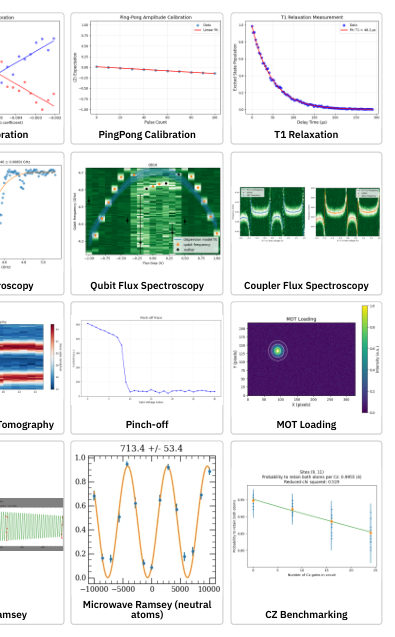
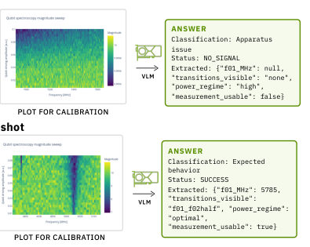
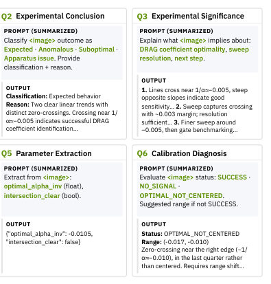
Main problem. The lack of a systematic evaluation for how well Vision-Language Models (VLMs) can interpret and diagnose quantum calibration plots, which is essential for automating quantum hardware management.
Main result. The study identifies a 'two-step capability gap' where models detect visual features but fail at scientific reasoning, and an 'MM-ICL gap' where many open-weight models degrade under multi-image in-context learning.
Method. The authors introduce QCalEval, a benchmark of 243 samples across 22 experiment families, and evaluate 18 VLMs using zero-shot and in-context learning settings across six task types.
Summary. This paper introduces QCalEval, the first benchmark designed to test if Vision-Language Models can understand quantum calibration plots. It evaluates models on tasks ranging from simple data extraction to complex scientific diagnosis of superconducting and neutral atom systems. The researchers found that while models are good at seeing features, they struggle with high-level reasoning and often exhibit an 'optimistic bias' toward successful results. The work also presents a fine-tuned model, NVIDIA Ising Calibration 1, which shows improved performance in hardware-specific diagnostics.
Model / system. The benchmark covers various quantum platforms, specifically superconducting qubits (e.g., Rabi, Ramsey, DRAG) and neutral atoms (e.g., Rydberg spectroscopy, MOT loading).
Key observables. Peak locations, fringe spacing, contrast, linewidth, clustering, geometric structures (ridges, hotspots, oscillations, decays), and operational statuses (SUCCESS/FAILURE).
Important parameters / regimes. Transition frequencies (f01), power regimes, T1/T2* relaxation times, and DRAG coefficients.
Assumptions / limitations. The benchmark uses a mix of simulated and real hardware data; the evaluation assumes that LLM-based judges can accurately assess free-text scientific reasoning.
Figures summary. Figure 1 shows diverse calibration plots (1D, 2D, scatter); Figure 2 illustrates the zero-shot vs. in-context learning setup; Figure 3 shows task taxonomy using DRAG calibration; Case studies show failures in readout and Ramsey fringes.
Paper structure. Introduction of the calibration automation problem, presentation of the QCalEval benchmark and task taxonomy, evaluation of various VLMs (closed and open-weight), SFT ablation studies, release of the Ising Calibration 1 model, and discussion of limitations.
Quantum computing calibration depends on interpreting experimental data, and calibration plots provide the most universal human-readable representation for this task, yet no systematic evaluation exists of how well vision-language models (VLMs) interpret them. We introduce QCalEval, the first VLM benchmark for quantum calibration plots: 243 samples across 87 scenario types from 22 experiment families, spanning superconducting qubits and neutral atoms, evaluated on six question types in both zero-shot and in-context learning settings. The best general-purpose zero-shot model reaches a mean score of 72.3, and many open-weight models degrade under multi-image in-context learning, whereas frontier closed models improve substantially. A supervised fine-tuning ablation at the 9-billion-parameter scale shows that SFT improves zero-shot performance but cannot close the multimodal in-context learning gap. As a reference case study, we release NVIDIA Ising Calibration 1, an open-weight model based on Qwen3.5-35B-A3B that reaches 74.7 zero-shot average score.
Authors: Ryo Asaka
Type: theory · Category: quantum information and computing · PDF: https://arxiv.org/pdf/2604.25747v1
Analysis basis: full PDF text, analyzed in chunks
Topic relevance: correlated / nonlocal dissipation 2/5 · entanglement & information structure 2/5
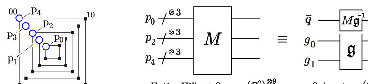
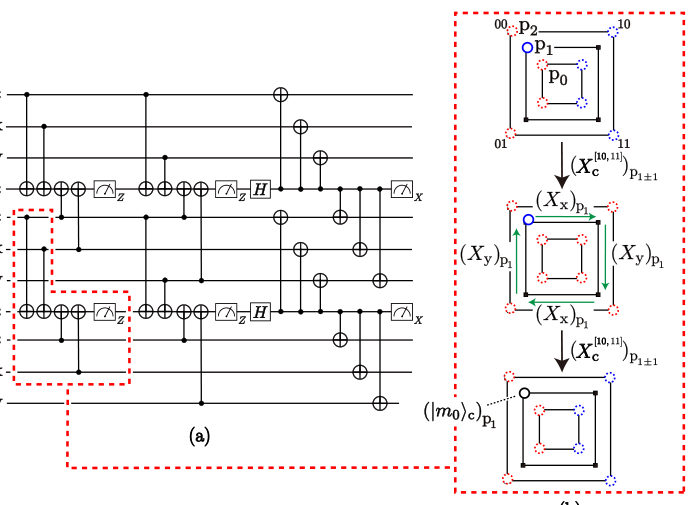
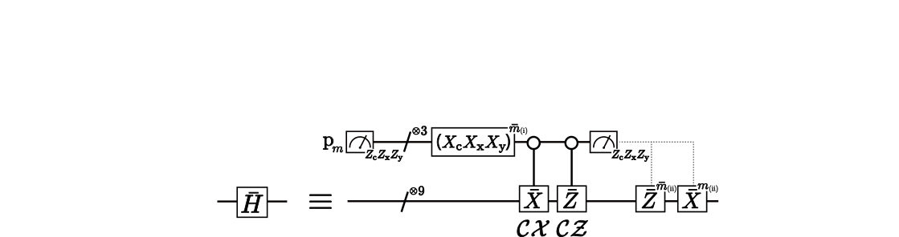
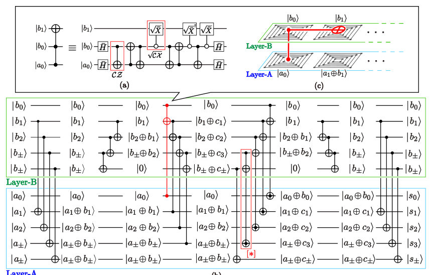
Main problem. Developing a quantum error correction (QEC) scheme that exploits Quantum Spatial Distribution (QSD) and gauge symmetry to protect against noise affecting both spin and position states.
Main result. The authors prove that gauge symmetry provides resilience against a unified noise model (spin/position decoherence and dephasing) and demonstrate that QSD allows for scalable, space-efficient quantum gates and adders using only nearest-neighbor interactions.
Method. The study utilizes the stabilizer formalism and operator quantum error correction, specifically employing Poulin's stabilizer formalism to implement a subsystem structure with gauge qubits.
Summary. This paper introduces a quantum error correction scheme that utilizes both the spin and position states of particles (Quantum Spatial Distribution). By leveraging gauge symmetry, the authors demonstrate that the system can be made resilient to noise that affects both spin and spatial coherence. The architecture is shown to be highly flexible, allowing for the 'stacking' of systems to implement universal quantum gates and even a quantum adder using only local, short-range interactions. This approach provides a potential path toward space-efficient and scalable quantum computing architectures.
Model / system. A system of particles arranged on nested squares where each particle possesses both a spin (coin) state and a position (spatial) state, encoding Shor's nine-qubit code through superpositions of these states.
Key observables. Stabilizer generators (s0-s5), logical Pauli operators (X-bar, Z-bar), and gauge transformations.
Important parameters / regimes. Error probabilities (p) for spin-flip, phase-flip, and tunneling/position-related noise; interaction range limited to nearest and next-nearest neighbors.
Assumptions / limitations. Gate operations are assumed to act exclusively on either spin or position states to reduce circuit depth; the error analysis assumes single-event errors do not involve simultaneous Pauli-X operations on both axes.
Figures summary. Figure 1 shows the physical arrangement of particles on nested squares and the concept of gauge symmetry; Figure 2 illustrates the stabilizer measurement scheme; Figure 3 shows a gate-teleportation circuit for the logical Hadamard gate; Figure 4 displays circuits for Toffoli and quantum adder implementations; Figure 5 shows the CX gate procedure and two-layer architecture.
Paper structure. The paper begins by defining the QSD architecture and encoding, introduces a unified noise model, proves the error-correcting capabilities provided by gauge symmetry, and concludes by demonstrating the implementation of universal quantum gates and a quantum adder.
Why it may be interesting. This work is highly relevant to open quantum systems and quantum computing as it proposes a novel way to use spatial degrees of freedom (positional states) as a resource for error protection and architectural flexibility.
We explore what the integrated use of quantum spatial distribution (QSD), or more specifically, superposition of both spin and position states of particles, and gauge symmetry (GS) within stabilizer formalism provides for quantum error correction. The exploration employs $3+2$ particles on nested squares proposed in the companion letter (arXiv:2504.07941), where three of them encode Shor's nine-qubit code and the remaining two detect errors in this code through their spin state measurements (unlike the letter's quantum walk model, each particle evolves by gate operations acting exclusively on either its spin or position state). The first result is that the GS offers resilience against three types of noise acting on a particle: arbitrary decoherence of its spin or position state, and dephasing of both states, which partly or completely destroys its QSD. To show that, we formulate a noise model unifying the above noise and prove the correctability of this unified model under our error-correcting scheme. The second result is that QSD provides architectural flexibility allowing us to stack the error-correcting systems both vertically and horizontally. Indeed, we show implementations of the error detection (stabilizer measurement), logical Hadamard and Toffoli gates, and a quantum adder with the required interactions only between nearest-neighbor and next-nearest-neighbor particles.
Authors: Daria Ruzhitskaya, Irina Zhluktova, Anastasiya Ponosova, Fedor Ushakov, Andrey Zverev, Galina Tertyshnikova, Tianyi Xing, Kirill Min'kov, Daniil Trefilov, Anqi Huang, Vladimir Kamynin, Vladimir Tsvetkov, Vadim Makarov
Type: experiment · Category: quantum information and computing · PDF: https://arxiv.org/pdf/2604.25620v1
Analysis basis: full PDF text, analyzed in chunks
Topic relevance: QC/QI experiment 2/5 · quantum optics experiment 2/5
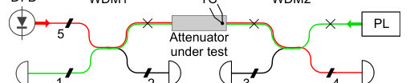
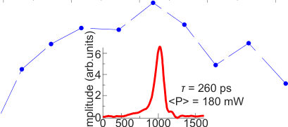
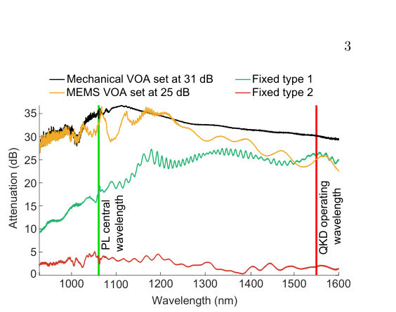
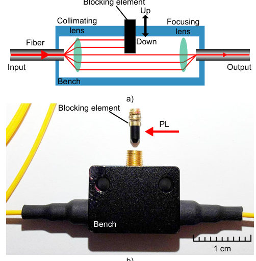
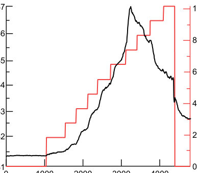
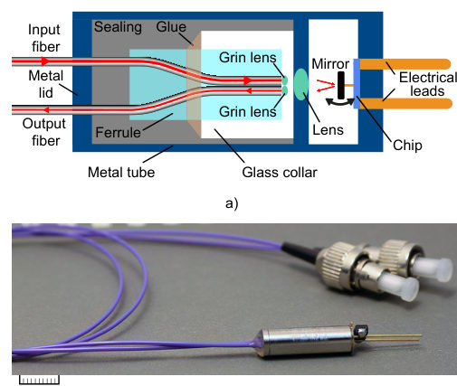
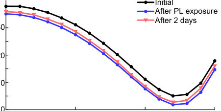
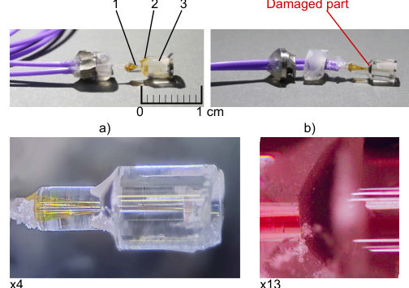
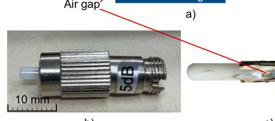
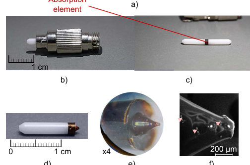
Main problem. Investigating the vulnerability of fiber-optic attenuators in QKD systems to laser-damage attacks (LDAs) using 1061-nm sub-nanosecond pulsed lasers, which may create hidden side-channels.
Main result. MEMS-based attenuators suffered irreversible damage (up to 3.8 dB reduction), and pulsed irradiation was found to 'prime' absorption-based fixed attenuators, significantly lowering their optical damage threshold for subsequent CW attacks.
Method. Experimental exposure of four types of fiber-optic attenuators to 1061-nm pulsed laser radiation (up to 1 W average power) and monitoring changes in 1550-nm transmission, accompanied by microscopic and spectroscopic analysis.
Summary. This paper investigates how high-power pulsed lasers at 1061 nm can damage or 'prime' optical components in QKD systems. The researchers found that MEMS-based attenuators can suffer permanent damage, and that pulsed light can lower the damage threshold of fixed attenuators for subsequent continuous-wave attacks. These findings reveal a potential hidden side-channel for eavesdropping that existing countermeasures might not address.
Model / system. An experimental setup involving a 1061-nm pulsed laser (master oscillator and YDFA stages) and a 1550-nm DFB laser simulating QKD signals, testing various attenuators including MEMS-based, mechanical, and fixed-gap/absorption types.
Key observables. Attenuation coefficient changes at 1550 nm, transmission spectra (1061 nm vs 1550 nm), surface temperature, and microscopic damage patterns.
Important parameters / regimes. 1061-nm wavelength, 1550-nm operating wavelength, 1 MHz repetition rate, 260-410 ps pulse duration, and laser average power up to 1030 mW.
Assumptions / limitations. The study assumes that the observed attenuation changes (reduction >= 1 dB or increase >= 3 dB) are sufficient to constitute a successful eavesdropping or denial-of-service attack.
Figures summary. Fig 1: Experimental setup schematic; Fig 2: Laser power vs. pulse duration; Fig 3: Transmission spectra comparison; Fig 4: Mechanical VOA photo; Fig 5-7: MEMS VOA attenuation changes and damage; Fig 8: Microscopic damage comparison.
Paper structure. Introduction of the LDA threat, description of the experimental setup and laser parameters, results for different attenuator types (mechanical, MEMS, fixed), analysis of damage mechanisms (carbonization/priming), and conclusions on security implications.
The security of quantum key distribution (QKD) systems relies on the physical integrity of their components. While laser-damage attacks (LDAs) using high-power continuous-wave (cw) lasers have been well studied, the threat posed by pulsed lasers at alternative wavelengths remains underestimated. Here, we experimentally investigated the stability of four types of fiber-optic attenuators under exposure to sub-picosecond pulses at 1061 nm with average power reaching 1 W. Mechanical variable attenuators with blocking elements and fixed air-gap attenuators show resistance to this attack. MEMS-based variable attenuators exhibit increased attenuation or irreversible damage that causes a permanent reduction in attenuation of approximately 3.8 dB. For fixed attenuators with an absorption element, we demonstrate that initial pulsed irradiation significantly lowers the optical damage threshold of the components compared to direct cw attacks. The attenuation reduction achieved is up to 7 dB at a 1 W cw laser at 1550 nm. These results highlight the possibility of establishing a hidden side-channel for eavesdropping attacks and underscore the insufficiency of existing countermeasures against sophisticated LDA scenarios.
Authors: Igor V. Parshin, Igor V. Rubtsov, Alexander L. Burin
Type: theory · Category: disordered systems and neural networks · PDF: https://arxiv.org/pdf/2604.25037v1
Analysis basis: full PDF text, analyzed in chunks
Topic relevance: non-equilibrium dynamics 2/5 · non-equilibrium universality 2/5
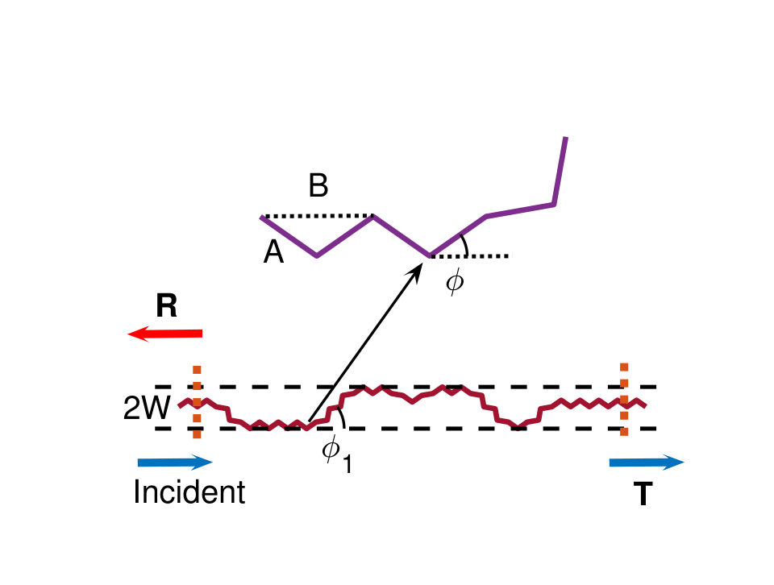
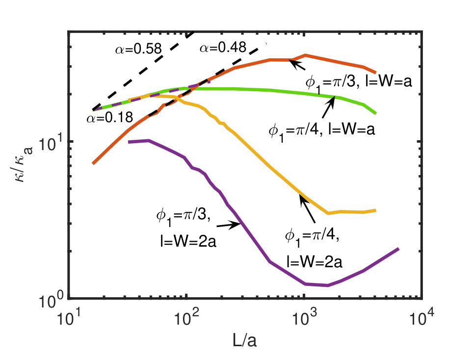
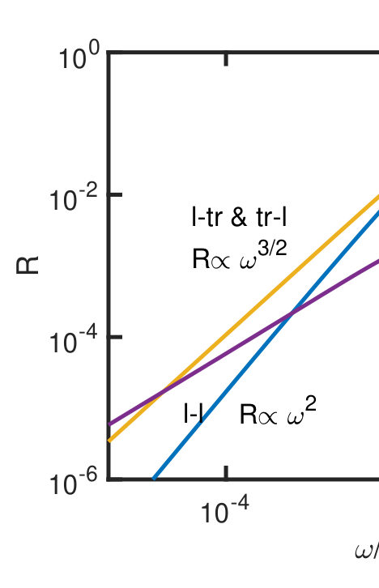
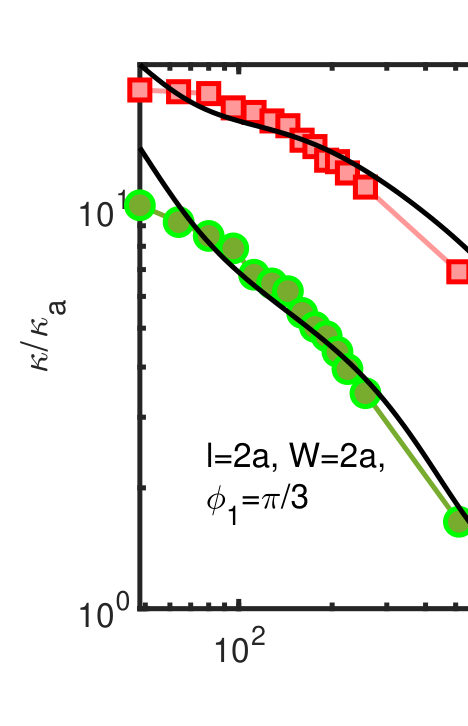
Main problem. Understanding how structural defects, specifically gauche kinks, affect the thermal conductivity and phonon transport regimes in aligned polymer chains.
Main result. The study identifies a non-monotonic dependence of thermal conductivity on chain length, featuring ballistic transport at short scales, Anderson localization at intermediate scales, and superdiffusive transport (scaling as L^1/3) at long scales.
Method. Numerical evaluation using an advanced transfer matrix method to compute phonon transmission coefficients, integrated via the generalized Landauer formula.
Summary. This paper investigates how structural kinks in aligned polymers influence heat transport. By using a numerical transfer matrix approach, the authors show that thermal conductivity does not follow a simple Fourier law but instead exhibits a non-monotonic dependence on chain length. They identify three distinct regimes: ballistic transport, Anderson localization, and long-range superdiffusive transport. These findings provide a microscopic explanation for the high thermal conductivity observed in aligned polymer nanofibers.
Model / system. A 2D 'fence model' representing aligned polymer molecules (like polyethylene) with randomly distributed gauche kinks modeled as local rotations and transverse displacements.
Key observables. Thermal conductivity (kappa) as a function of chain length (L/a), phonon transmission coefficients (T and R), and reflection coefficient R(omega).
Important parameters / regimes. Kink density (n), inter-kink distance (l), rotation angle (phi_1), transverse displacement (W), and chain length (L).
Assumptions / limitations. The model assumes harmonic interactions between nearest and next-nearest neighbors and treats kinks as independent, non-intersecting defects in the dilute limit.
Figures summary. Figure 1 illustrates the fence model and geometry; Figure 2 compares thermal conductivity vs. length to experimental power-law scaling; Figure 3 shows a single defect model and frequency-dependent reflection.
Paper structure. The paper introduces the problem of heat transport in polymers, describes the 2D fence model and Hamiltonian, details the transfer matrix method, presents results on length-dependent conductivity regimes, and discusses implications for molecular alignment and biological membranes.
Why it may be interesting. The paper explores the transition between ballistic, localized, and superdiffusive transport regimes in a disordered 1D-like system, which is a fundamental topic in many-body dynamics and disordered systems.
Thermal conductivity of aligned polymer molecules can be exceptionally high along the alignment direction due to energy transport through strong covalent bonds. At the same time, it is highly sensitive to molecular conformation, varying by orders of magnitude as a result of gauche kinks. Here, we theoretically investigate phonon transport in kinked polymers by numerically evaluating thermal conductivity and interpreting the results in terms of phonon scattering from randomly distributed kinks. For strongly aligned polymers with restricted deviations from a linear backbone, we find that heat transport becomes superdiffusive at long lengths, with thermal conductivity scaling as $κ\propto L^{1/3}$. At shorter lengths, thermal conductivity exhibits non-monotonic behavior: it increases at very short scales due to ballistic transport of almost all phonons, then decreases at intermediate lengths due to the Anderson localization of most phonon modes. These results are consistent with experiments and molecular dynamics simulations, and they elucidate the microscopic mechanisms governing heat transport in polymers.
Authors: Jinghong Yang, Christopher F. Kane, Shabnam Jabeen
Type: theory · Category: numerical methods · PDF: https://arxiv.org/pdf/2604.24896v1
Analysis basis: full PDF text, analyzed in chunks
Topic relevance: analog quantum simulation 2/5 · methods for driven-dissipative 2/5
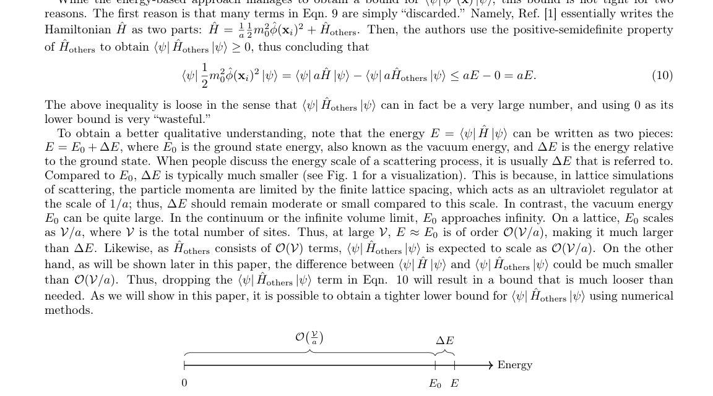
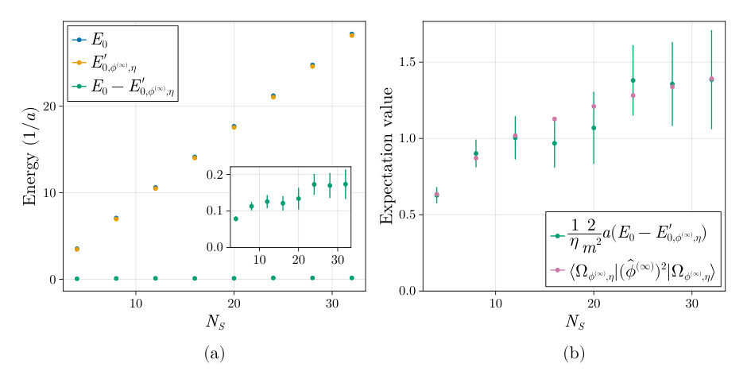
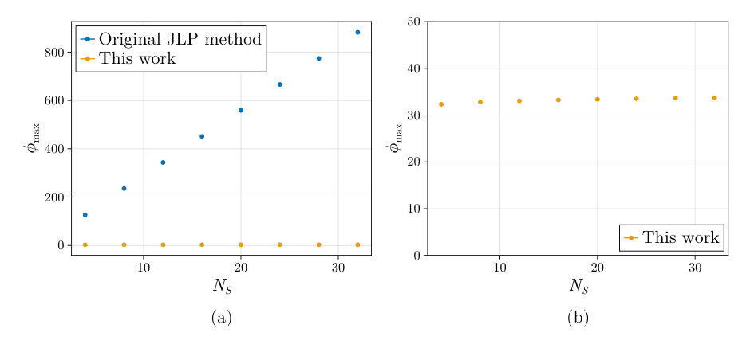
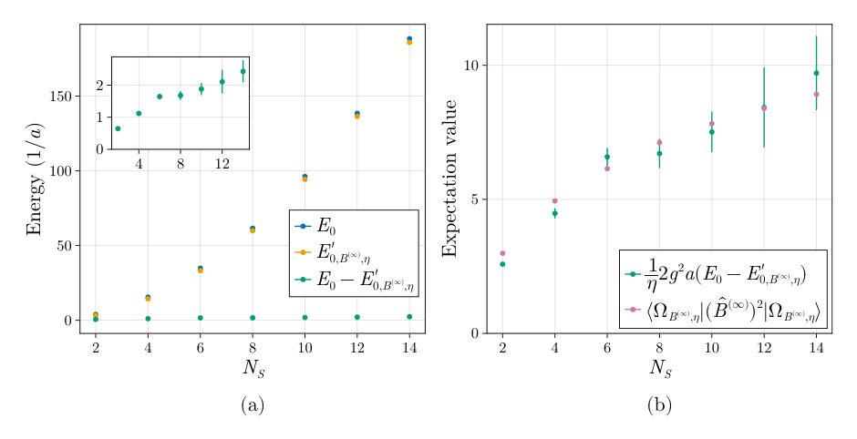
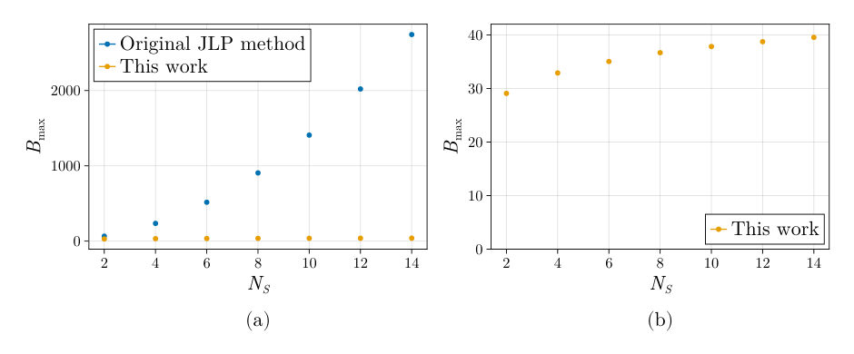
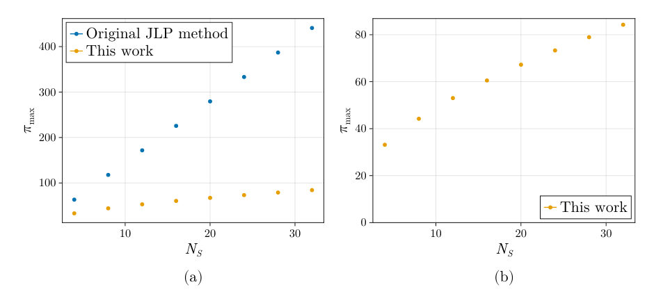
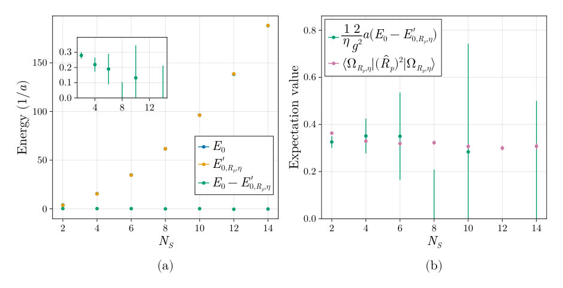
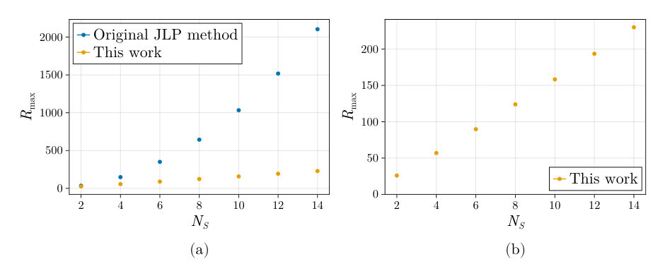
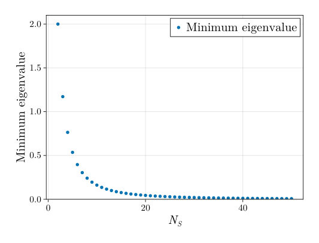
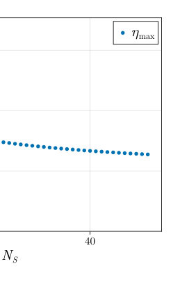
Main problem. The existing energy-based bound for boson truncation in quantum field theory simulations is overly conservative and scales unfavorably with the lattice volume, leading to excessive qubit requirements.
Main result. The authors developed a new methodology that significantly tightens the truncation bound, achieving reductions in the required cutoff proportional to the volume or its square root in different field components.
Method. A dual approach combining an improved analytical derivation (p-norm trick) with a numerical procedure using Euclidean path-integral Monte Carlo (Monte Carlo-assisted method).
Summary. This paper addresses the inefficiency of current methods for determining the truncation cutoff needed when simulating bosonic fields on quantum computers. By using a combination of a new analytical p-norm technique and Monte Carlo simulations, the authors significantly tighten the energy-based bounds. This reduction in the required cutoff helps mitigate the unfavorable scaling of computational resources with system volume. The approach is successfully applied to both scalar field theory and U(1) gauge theory.
Model / system. The method is demonstrated on (1+1)-dimensional scalar phi-4 field theory and (2+1)-dimensional U(1) gauge theory in the dual formalism.
Key observables. Field truncation cutoffs (phi_max, pi_max, B_max), truncation error (epsilon), and expectation values of field operators.
Important parameters / regimes. Lattice volume (V), lattice spacing (a), mass (m_0), coupling constant (lambda_0 or g), and target digitization error (epsilon).
Assumptions / limitations. The energy of the state relative to the vacuum is assumed to be below 1/a, and the method relies on the applicability of energy-based bounds.
Figures summary. Figure 12 and 13 show the extrapolation of field expectation values toward the continuum limit (zero temporal lattice spacing) for scalar and U(1) gauge theories.
Paper structure. The paper introduces the problem of boson truncation error, reviews existing bounds, presents the new analytical and Monte Carlo-based methodologies, demonstrates the method's efficiency on scalar and gauge theories, and performs continuum limit extrapolations.
Why it may be interesting. This work provides a more efficient way to digitize bosonic degrees of freedom, which is crucial for reducing the computational overhead and qubit requirements in the quantum simulation of gauge theories.
Quantum simulation offers a promising framework for quantum field theory calculations. Obtaining reliable results, however, requires careful characterization of systematic uncertainties. One important source is the boson truncation error, which arises from representing infinite-dimensional local Hilbert spaces with finite-dimensional ones. Previous studies have examined this problem from several perspectives. In particular, Jordan, Lee, and Prekill (arXiv:1111.3633) derived an energy-based bound applicable to generic low-energy states across a broad class of field theories. However, this approach often yields overly conservative bounds, especially at large volumes. In this work, we introduce a new methodology that significantly tightens the energy-based boson truncation bound through two complementary advances: an improved analytic derivation and a Monte Carlo-based numerical procedure. We demonstrate the method in (1+1)-dimensional scalar field theory and (2+1)-dimensional U(1) gauge theory in the dual formalism. Our approach substantially mitigates the volume dependence of the required truncation cutoff, achieving reductions nearly proportional to the volume in some cases and to the square root of the volume in others.
Authors: O. F. de Alcantara Bonfim
Type: theory · Category: other · PDF: https://arxiv.org/pdf/2604.25048v1
Analysis basis: full PDF text, analyzed in chunks
Topic relevance: quantum measurements 2/5
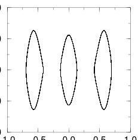
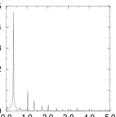
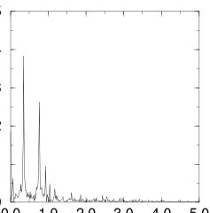
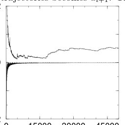
Main problem. Investigating whether Bohmian trajectories in a one-dimensional bistable potential can exhibit chaotic behavior, challenging existing literature that claims chaos is impossible in 1D systems.
Main result. The study demonstrates that Bohmian trajectories can undergo periodic, quasiperiodic, and chaotic motion, with transitions occurring continuously depending on the initial wave packet.
Method. Numerical integration of the Bohmian guidance equation using a fourth-order Runge-Kutta algorithm, combined with Fourier analysis, stroboscopic (Poincare) plots, and Lyapunov exponent calculations.
Summary. This paper explores the fundamental dynamics of Bohmian mechanics in a 1D system. It refutes the idea that 1D Bohmian trajectories are restricted from chaos by showing that a continuous bistable potential can produce periodic, quasiperiodic, and chaotic trajectories. By tuning the initial wave packet, the author demonstrates a continuous transition between these dynamical regimes. This provides new insights into the complex, non-linear nature of trajectories in the de Broglie-Bohm interpretation.
Model / system. A single quantum particle of mass M moving in a one-dimensional, analytically solvable, continuous bistable potential V(x).
Key observables. Particle position x(t), velocity, power spectrum P(f), phase-space portraits (Poincare plots), and the largest Lyapunov exponent.
Important parameters / regimes. Potential shape parameters (beta and xi), initial wave packet coefficients (cn), and the initial position of the particle.
Assumptions / limitations. The dynamics are governed by the de Broglie-Bohm interpretation of quantum mechanics, specifically utilizing the effective potential V_eff = V + Q.
Figures summary. Fig 1 shows the classical, quantum, and effective potentials alongside phase-space plots. Fig 2 displays a trajectory, Poincare plot, and power spectrum for quasiperiodic motion. Fig 3 shows similar plots for chaotic motion. Fig 4 illustrates the time dependence of the largest Lyapunov exponent.
Paper structure. The paper introduces the bistable potential and Bohmian framework, presents numerical methods, details specific cases of periodic and quasiperiodic motion, demonstrates the emergence of chaos, and concludes with a Lyapunov exponent analysis to confirm chaotic regimes.
We analyze the dynamics of a quantum particle in a one-dimensional bistable potential within the framework of Bohm's quantum mechanics. We give arguments that evidence the fallacy of certain claims found in the literature dealing with the impossibility of chaotic behavior of Bohmian trajectories in one-dimensional systems. We find that an appropriate choice for the initial position and wave packet causes the particle to undergo periodic, quasiperiodic, or chaotic motion. The transitions between these regimes occur in a continuos fashion.
Authors: Rubén Darío Guerrero
Type: theory · Category: numerical methods · PDF: https://arxiv.org/pdf/2604.25532v1
Analysis basis: full PDF text, analyzed in chunks
Topic relevance: methods for driven-dissipative 2/5
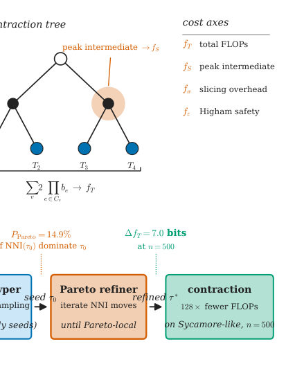
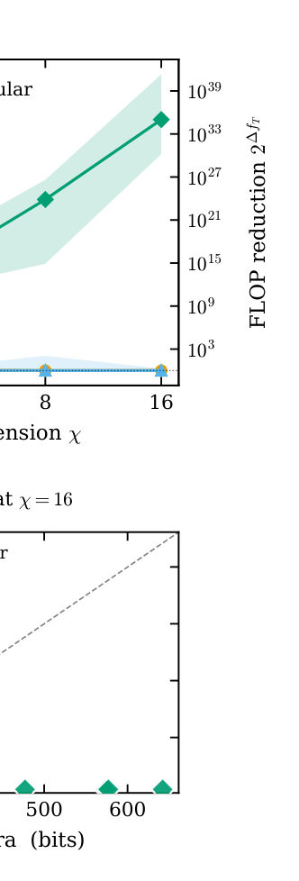
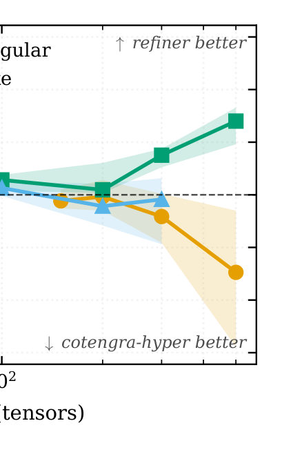
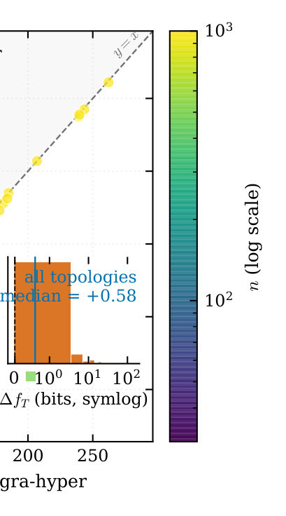
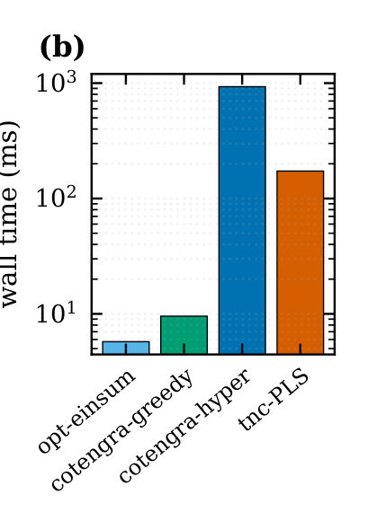
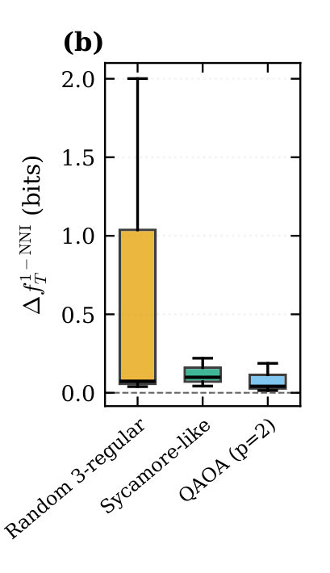
Main problem. Identifying and addressing a 'refinement gap' in the cotengra-hyper tensor-network contraction pipeline where hyperoptimization fails to find the most efficient contraction orders on specific topologies.
Main result. A local-refinement stage using Nearest-Neighbor Interchange (NNI) provides a massive, monotonically increasing FLOP-cost reduction advantage on Sycamore-like topologies as the bond dimension increases.
Method. The authors append a GPU-parallelized NNI search stage to the existing cotengra-hyper pipeline, using a four-axis Pareto-dominance acceptance rule to optimize FLOPs, memory, slicing overhead, and error bounds.
Summary. This paper introduces a local-refinement algorithm to improve the efficiency of tensor network contractions. By adding a nearest-neighbor interchange search to existing hyperoptimization pipelines, the authors show that one can capture significant computational savings that hyperoptimizers miss. This advantage is particularly dramatic on Sycamore-like topologies, where the reduction in floating-point operations grows exponentially with the bond dimension. The method is computationally efficient and requires no changes to the existing optimization framework.
Model / system. The study focuses on tensor network contraction orders for Sycamore-like topologies (2D grids with diagonal couplings), random 3-regular graphs, and QAOA interaction graphs.
Key observables. Delta f_T (log-scale difference in predicted FLOP-cost in bits), win rate of the refiner, and the fraction of Pareto-dominating neighbors (P_Pareto).
Important parameters / regimes. Bond dimension (chi) ranging from 2 to 16, number of tensors (n) up to 500, and circuit depth (m) for Sycamore-53 circuits.
Assumptions / limitations. The use of a predicted cost-model as a proxy for actual computational cost at large bond dimensions.
Figures summary. Figures show the monotonic growth of cost reduction (bits) with bond dimension, the topology-specific nature of the advantage compared to control graphs, and the success of the refiner on actual Sypectrum-53 circuit depths.
Paper structure. The paper identifies a gap in existing pipelines, introduces the NNI refinement method, demonstrates scaling advantages on Sycamore-like topologies, provides control experiments on random/QAOA graphs, performs ablation studies on acceptance rules, and validates results on actual quantum circuit architectures.
We identify a missing local-refinement stage in the cotengra tensor-network contraction pipeline and show that its impact grows monotonically with bond dimension on the \emph{connectivity graph} of Sycamore-like topologies. Appending a nearest-neighbor interchange (NNI) search to the \cotengra{} output at matched 8-s wallclock yields a median \emph{predicted} cost-model gap $Δ\fT$ at $n{=}500$ that grows monotonically and approximately linearly in $χ$, from $\sim\!15$~bits at $χ{=}2$ to $\sim\!116$~bits at $χ{=}16$ (Fig.~\ref{fig:chi_sweep}), with the refiner winning on $25/25$ seeds at every tested $χ$. Two control families -- random $3$-regular and QAOA $p{=}2$ interaction graphs -- show median $|Δ\fT| \leq 0.71$~bits across both controls at every $χ$, with refiner win rate falling toward chance as $χ$ grows; the signal is topology-specific, not a generic refinement-budget effect. An ablation establishes that refinement itself, not the four-axis Pareto acceptance rule, drives the gain ($|Δ\fT| \lesssim 0.1$ bits between scalar and Pareto arms at $χ{=}2$). The Sycamore-circuit envelope (App.~\ref{em:sec:results:syccirc}) reports the corresponding refinement on actual random circuits at depths $m \in \{4, 6, 8, 10, 12\}$, where the refiner wins on $5/5$ instances at every depth. The advantage is therefore largest precisely in the bond-dimension regime relevant to physical contraction.
Authors: Zachary Macaskill-Smith, Unmol Sharma, Melissa Warner, Kálmán Varga, David A. B. Hyde
Type: both · Category: quantum information and computing · PDF: https://arxiv.org/pdf/2604.25433v1
Analysis basis: full PDF text, analyzed in chunks
Topic relevance: QC/QI experiment 2/5
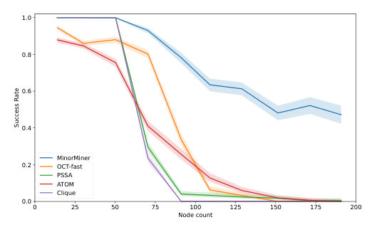
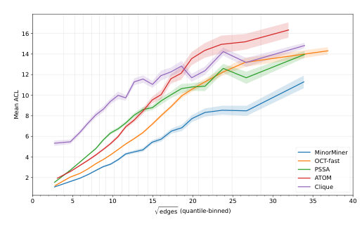
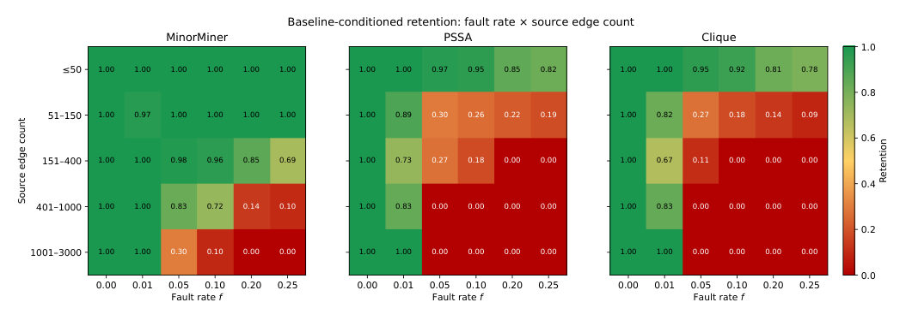
Main problem. The lack of a standardized, reproducible, and comparable benchmarking framework for minor embedding algorithms used to map logical problem graphs onto the sparse hardware topologies of quantum annealers.
Main result. The authors introduce Ember, a benchmarking suite that reveals no single embedding algorithm dominates universally; performance rankings vary systematically based on graph structure, hardware topology (Chimera, Pegasus, Zephyr), and hardware fault rates.
Method. The development of Ember, an open-source Python framework featuring a massive library of 24,016 graphs across 35 categories and a unified analysis pipeline to evaluate algorithms like MINORMINER, OCT-FAST, and CHARME.
Summary. This paper introduces Ember, a new benchmarking suite designed to provide a standardized way to compare algorithms that map logical problems to quantum annealing hardware. By testing a vast library of graph types, the authors demonstrate that the 'best' algorithm depends heavily on the specific structure of the problem and the hardware topology being used. The framework also allows researchers to study how embedding quality degrades under realistic hardware errors. This work is crucial for the development of more efficient compilers for quantum annealing processors.
Model / system. The study focuses on D-Wave quantum annealing hardware architectures, specifically the Chimera, Pegasus, and Zephyr topologies, used for solving Quadratic Unconstrained Binary Optimization (QUBO) problems.
Key observables. Success rate, Average Chain Length (ACL), Maximum Chain Length (MCL), wall time (runtime), and algorithmic retention under simulated hardware faults.
Important parameters / regimes. Graph node count (up to 65,536), edge density, hardware connectivity (node degree), and qubit/edge error rates (fault rates up to 0.25).
Assumptions / limitations. Chain length is used as a proxy for annealing fidelity; the fault model assumes uniform random removal of qubits/edges rather than spatially correlated errors.
Figures summary. Figure 1 shows success rate decay vs. node count; Figure 2 plots Mean ACL vs. edge count; Figure 3 illustrates algorithmic retention under increasing hardware fault rates.
Paper structure. The paper introduces the problem of embedding standardization, presents the Ember framework and its graph library, details the evaluation of various algorithms across different topologies, analyzes performance scaling and robustness to faults, and concludes with future research directions.
Minor embedding is a required compilation step for quantum annealing, mapping logical problem graphs onto sparse hardware topologies. Despite its central role in determining solution quality, no standardized benchmark exists for comparing embedding algorithms: prior studies use incompatible graph libraries, inconsistent metrics, and non-reproducible experimental setups, making cross-algorithm comparisons unreliable. We present Ember (Embedding Minor Benchmark for Evaluative Reproducibility), an open-source benchmarking framework addressing this gap. Ember provides a standardized algorithm interface with seeded, reproducible execution infrastructure; a diverse graph library of 24,016 instances spanning structured, random, and physics-motivated problem types not previously used in embedding benchmarks; and a unified analysis pipeline supporting all three current D-Wave hardware topologies (Chimera, Pegasus, Zephyr). We evaluate five algorithms across the full library on Chimera and find that no algorithm dominates universally: rankings vary systematically with graph structure, and the best algorithm depends on the family being embedded. We also examine the effects of hardware topology (including Pegasus and Zephyr), qubit error rates, and evaluate a reinforcement-learning approach (CHARME) within a narrower test set. Ember is available at https://github.com/zachmacsmith/ember and is installable via pip install ember-qc.
Authors: J. M. P. Carmelo
Type: theory · Category: strongly correlated electrons · PDF: https://arxiv.org/pdf/2604.25712v1
Analysis basis: full PDF text, analyzed in chunks
Topic relevance: entanglement & information structure 2/5
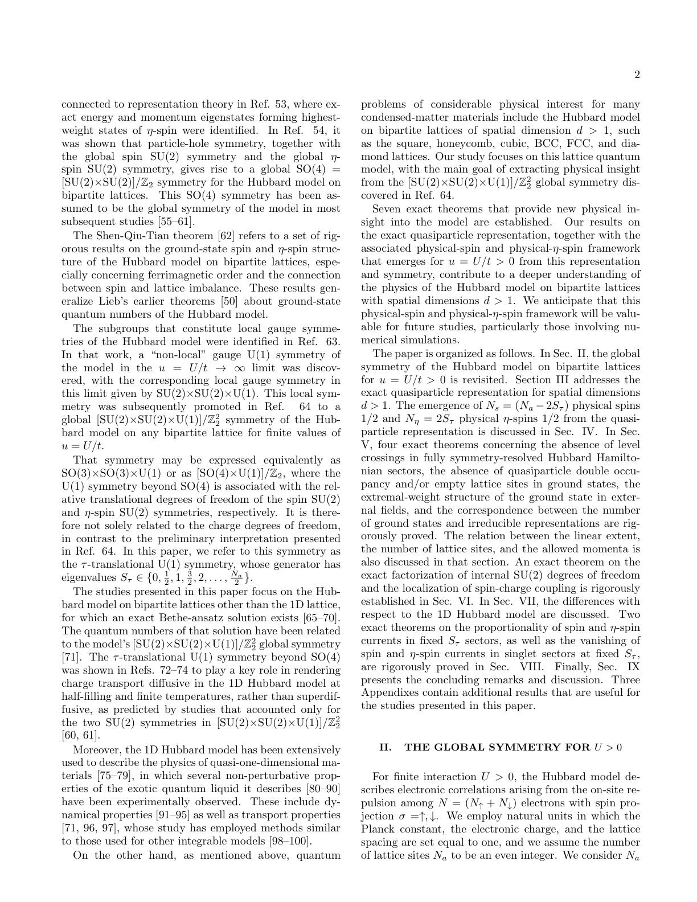
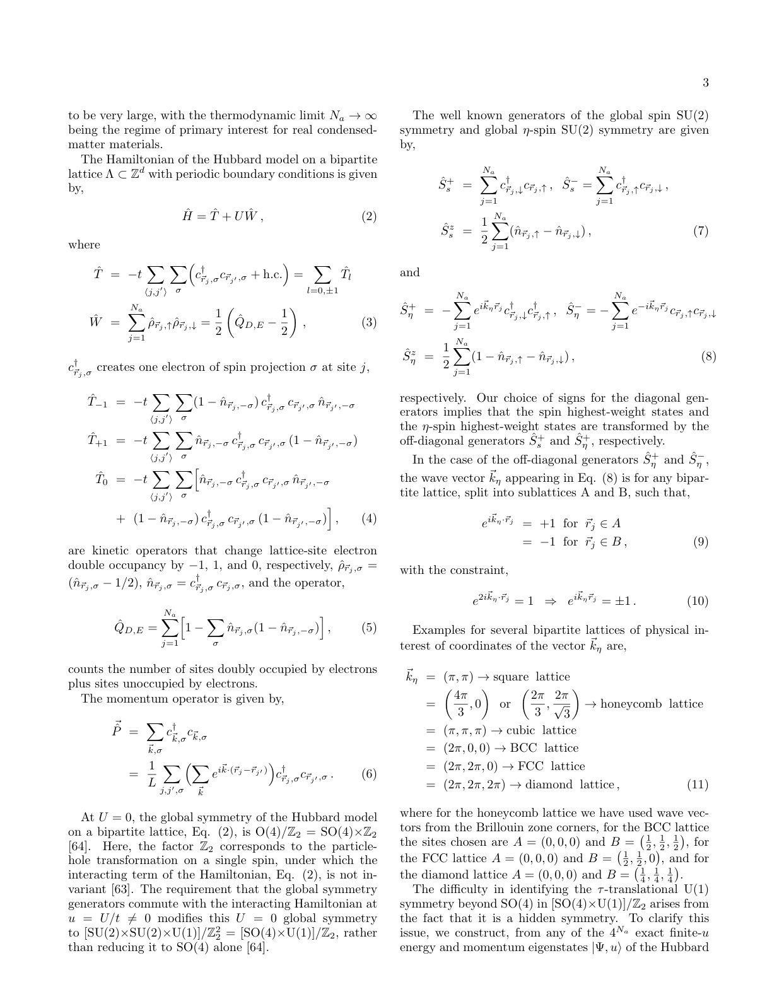
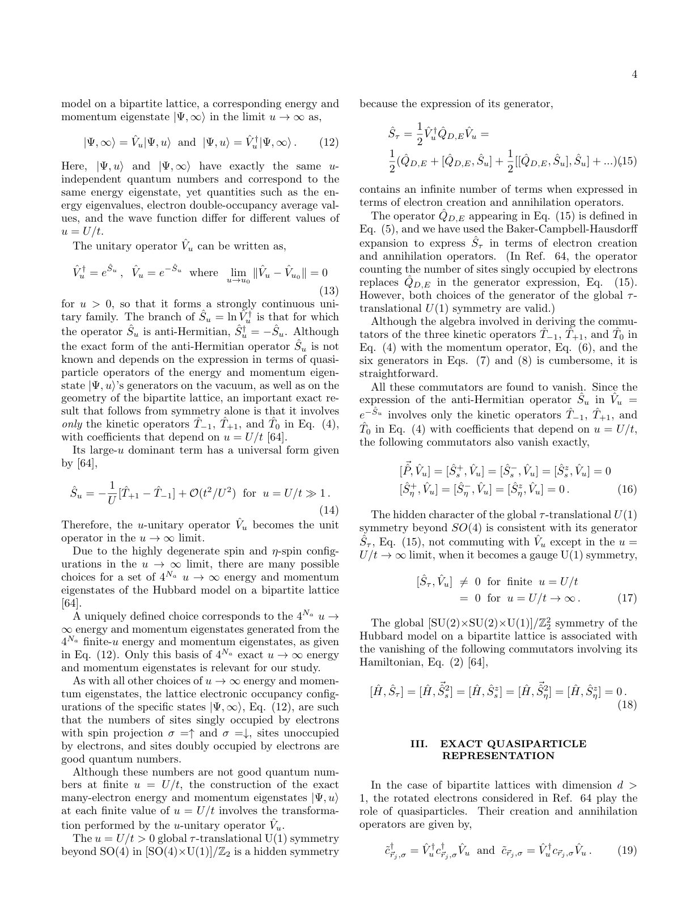
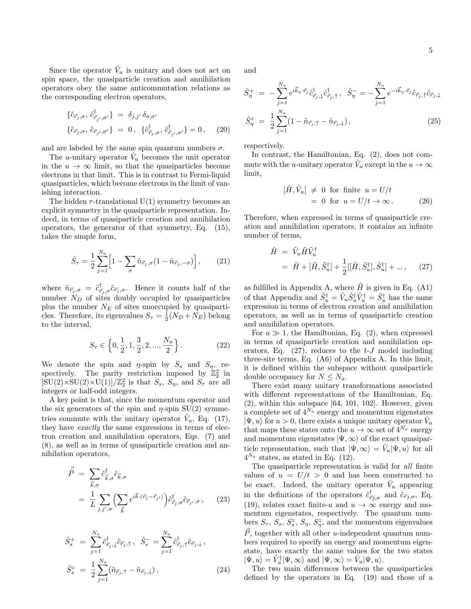
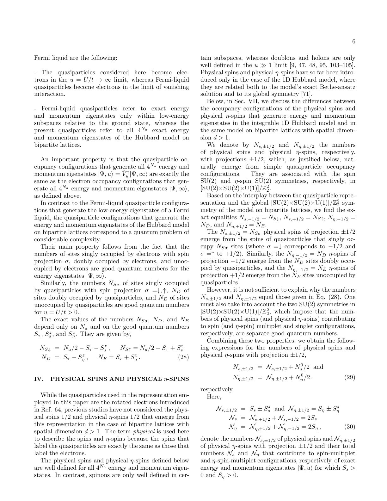
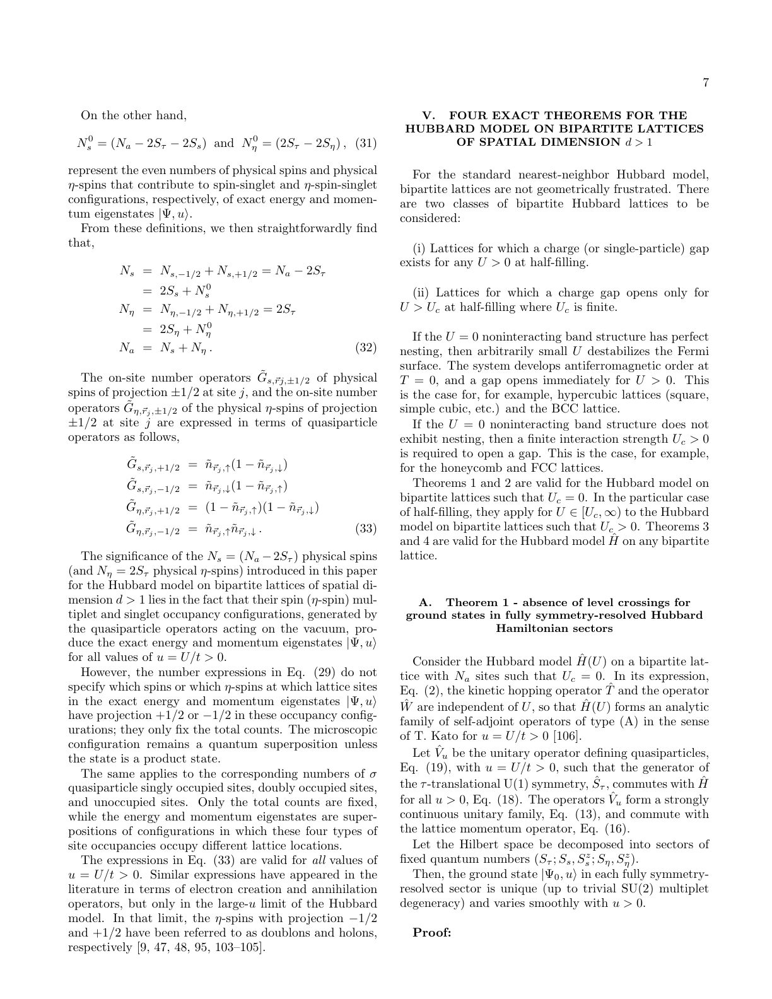
Main problem. The paper aims to establish exact results for the Hubbard model on bipartite lattices in dimensions d > 1 by utilizing its full [SU(2) x SU(2) x U(1)]/Z2^2 global symmetry, specifically addressing the previously ignored hidden U(1) symmetry.
Main result. The author establishes seven exact theorems regarding the ground state properties, including the absence of level crossings in symmetry-resolved sectors, the absence of quasiparticle double occupancy/empty sites, and the decomposition of spin-charge entanglement.
Method. The study employs an exact quasiparticle representation via a u-unitary transformation and utilizes the Perron-Frobenius theorem and analytic perturbation theory to prove ground state properties.
Summary. This paper provides a rigorous mathematical framework for the Hubbard model on bipartite lattices in dimensions greater than one. By identifying a hidden U(1) symmetry, the author establishes seven exact theorems that describe the ground state's behavior, such as the absence of level crossings and the suppression of certain charge fluctuations. These results offer a robust foundation for understanding electronic correlations in materials like graphene and cuprate superconductors. The work also demonstrates how the model reduces to the t-J model in the strong-coupling limit.
Model / system. The Hubbard model on bipartite lattices (such as square, honeycomb, cubic, BCC, FCC, and diamond) with transfer integral t and on-site repulsion U.
Key observables. Spin S_s, eta-spin S_eta, tau-translational U(1) generator S_tau, energy and momentum eigenstates, and spin/eta-spin currents.
Important parameters / regimes. Interaction strength u = U/t, number of lattice sites N_a, and the presence of external magnetic fields (h) or chemical potential (mu).
Assumptions / limitations. The results are derived for bipartite lattices in spatial dimensions d > 1 and specifically focus on the regime of finite U > 0.
Paper structure. The paper begins by identifying the full global symmetry and introducing a quasiparticle representation, followed by the derivation of seven specific theorems regarding ground state properties, and concludes with an analysis of the large-u limit and the mapping to the t-J model.
There are few exact results for the Hubbard model on bipartite lattices of spatial dimension $d>1$. Nevertheless, the Hubbard model with transfer integral $t$ and onsite repulsion $U$ on bipartite lattices with $N_a$ sites, such as the square, honeycomb, cubic, body-centered cubic, face-centered cubic, and diamond lattices, provides the simplest toy model for describing electronic correlations in many condensed-matter systems and is therefore a quantum problem of considerable physical interest. Seven exact theorems that provide new physical insight into the model are established. Overall, the exact framework based on physical spins and physical $η$-spins for the Hubbard model on bipartite lattices of spatial dimension $d>1$ introduced in this paper offers a robust foundation for future studies of the model, as well as of the condensed-matter materials, such as cuprate superconductors, graphene and graphene-derived systems, and other quantum systems, that it describes.
Authors: Sricharan Raghavan-Chitra, Arghadip Koner, Joel Yuen-Zhou
Type: theory · Category: other · PDF: https://arxiv.org/pdf/2604.25010v1
Analysis basis: full PDF text, analyzed in chunks
Topic relevance: Keldysh / 2PI / non-Gaussian methods 2/5
Main problem. Investigating whether the linear optical spectrum of coupled quantum emitter arrays can encode nonlinear optical information, specifically Raman-type vibrational signatures, challenging the classical assumption that linear response depends only on individual linear susceptibilities.
Main result. Demonstrated that inter-emitter interactions allow nonlinearities of individual monomers to emerge as vibrational sidebands in the linear response of arrays, even without cavities or permutational symmetry.
Method. Theoretical framework using retarded Green's functions, Dyson expansion, and a diagrammatic approach (ladder diagrams) to identify photophysical pathways and compute exact absorption spectra.
Summary. The paper shows that the linear absorption spectrum of quantum emitter arrays contains 'hidden' nonlinear information from the individual emitters. By using inter-emitter coupling, Raman-type vibrational features of monomers appear as sidebands in the collective linear response. This effect does not require cavities or high symmetry, making it a general feature of molecular aggregates and 1D arrays. This discovery bridges the gap between linear and nonlinear spectroscopy and enables new methods for spectral engineering.
Model / system. Quantum emitter arrays, including molecular heterodimers (e.g., Chl522-Chl520) and 1D/cyclic aggregates, modeled using a three-level vibronic Hamiltonian with electronic and vibrational degrees of freedom and dipole-dipole coupling.
Key observables. Linear absorption spectrum (sigma(omega)), Raman-type sidebands, and vibrational combination bands.
Important parameters / regimes. Excitonic coupling strength (J), vibrational frequency (omega_v), Huang-Rhys factor (lambda^2), electronic/vibrational decay rates (gamma), and exciton bandwidth (W).
Assumptions / limitations. Assumes inter-emitter coupling is mediated by the electromagnetic vacuum; uses a truncated three-level basis per monomer and a simplified shifted harmonic oscillator model.
Figures summary. Ladder diagrams illustrating zeroth, second, and fourth-order photophysical processes (Rayleigh vs. Raman pathways); plots of linear absorption spectra for heterodimers and 1D arrays showing emergent sidebands.
Paper structure. Introduction of the challenge to classical optical frameworks; derivation of the Green's function and Dyson expansion; application to heterodimers to show Raman encoding; extension to 1D/cyclic arrays; comparison with classical approximations (DDA/CPA) and many-body approximations (TPA).
Why it may be interesting. It reveals a way to probe hidden nonlinear/vibrational degrees of freedom using only linear spectroscopy, providing a new pathway for spectral engineering and quantum sensing in molecular aggregates and solid-state arrays.
Classical optical frameworks such as the discrete dipole approximation (DDA) assume that the linear spectrum of coupled quantum emitters can be computed solely from the linear susceptibilities of individual constituents. However, recent polariton studies show that cavity linear response can encode nonlinear optical susceptibilities. Here, we demonstrate that this phenomenon is more general: emitter-emitter interactions allow nonlinearities of individual emitters to emerge in the linear response of arrays, without cavities or permutational symmetry. To illustrate this phenomenon, we show linear spectra for coupled heterodimers and linear chains, and demonstrate that Raman features of individual monomers show up as vibrational sidebands of collective resonances. Moreover, tuning Raman-type anharmonicities enables systematic control of spectral features, establishing a genuine quantum optical effect in molecular aggregates and quantum emitter arrays, which goes beyond mean-field descriptions in light-matter interactions.
Authors: Xiansheng Cai, Han Wang, Kun Chen
Type: theory · Category: strongly correlated electrons · PDF: https://arxiv.org/pdf/2604.25199v1
Analysis basis: full PDF text, analyzed in chunks
Topic relevance: Keldysh / 2PI / non-Gaussian methods 2/5
Main problem. The systematic overestimation of bandwidth in alkali and alkaline-earth metals by Kohn-Sham eigenvalues compared to ARPES measurements, caused by the neglect of dynamical core-electron excitations in standard DFT.
Main result. The derivation of an Effective Field Theory (EFT) that introduces a renormalization factor (z_core) to the Kohn-Sham bands, successfully resolving the bandwidth discrepancy by accounting for frozen-core dynamics.
Method. Construction of an EFT for the inhomogeneous electron gas using a dual-fermion approach and Renormalized Perturbation Theory (RPT) to integrate out core electrons.
Summary. This paper addresses the long-standing discrepancy between DFT-calculated Kohn-Sham bands and experimental ARPES data in simple metals. By using an Effective Field Theory to account for the dynamical effects of core electrons that are usually 'frozen' in standard pseudopotentials, the authors derive a correction factor that narrows the predicted bandwidth. This approach successfully matches experimental results for several elements and demonstrates how LLM-based agents can be used to reconstruct and verify fundamental many-body theories.
Model / system. The system consists of sp-bonded metals (Li, Na, K, Mg, Ca, Al, Si) modeled via a Born-Oppenheimer action and a Kohn-Sham Hamiltonian augmented by an energy-dependent pseudopotential.
Key observables. Quasipability bandwidth, quasiparticle residue (z), effective mass (m*), and the frozen-core renormalization factor (z_core).
Important parameters / regimes. Core excitation energy (Delta E_c), core form factor (f_c^K), and the scale separation ratio (epsilon_F / Delta E_c).
Assumptions / limitations. Assumes scale separation between core and valence energies, approximate Galilean invariance of the uniform electron gas, and the validity of the Born-Oppenheimer approximation.
Figures summary. Comparison of LDA and PBE band structures with and without EFT corrections for various elements; validation of the Li BCC valence band structure using different pseudopotentials.
Paper structure. Introduction of the bandwidth discrepancy; derivation of the EFT and the energy-dependent pseudopotential; application of Renormalized Perturbation Theory; numerical validation against ARPES and DMFT; discussion of the 'Agentic Science' paradigm for theory construction.
Kohn-Sham (KS) eigenvalues are routinely compared with angle-resolved photoemission (ARPES) and used as input for many-body methods, yet density functional theory (DFT) assigns them no physical meaning. For alkali and alkaline-earth metals, KS bandwidths overestimate ARPES measurements by 20-35%, a discrepancy that persists across all exchange-correlation functionals. We construct an effective field theory (EFT) of the inhomogeneous electron gas and show that two conditions imply KS bands are the quasiparticle bands, up to a frozen-core renormalization factor zcore: a scale separation between core excitation energies and the valence Fermi energy, and an approximate Galilean invariance of the uniform electron gas confirmed by diagrammatic Monte Carlo. This factor reflects dynamical core excitations that conventional pseudopotentials freeze out and no static potential can capture. The correction 1-zcore reaches 20-35% for alkali metals but falls below 5% for Al and Si, explaining both the failure and success of KS band theory. We derive a closed-form post-SCF formula and validate it for Li, Na, K, Ca, Mg, Al, and Si; the predicted quasiparticle bands resolve the long-standing ARPES bandwidth discrepancy, matching embedded dynamical mean-field theory at negligible cost. This work also exemplifies first-principles agentic science, a direction particularly suited to the AGI-for-Science paradigm: an LLM-co-developed derivation with controlled approximations, verified symbolically and against a few experiments, becomes a deterministic harness for agentic scale-out, resolving simultaneously the LLM audit bottleneck and the non-falsifiability of fit-based AI-for-science.
Authors: Dallin Fisher, Qi-Jun Hong
Type: theory · Category: statistical mechanics · PDF: https://arxiv.org/pdf/2604.24948v1
Analysis basis: full PDF text, analyzed in chunks
Topic relevance: entanglement & information structure 2/5
Main problem. The difficulty of computing thermodynamic entropy in interacting and complex systems where closed-form solutions are rare, and the need to validate an information-theoretic framework for entropy estimation.
Main result. The authors analytically and numerically demonstrate that the asdf method accurately reproduces the thermodynamic entropy for the ideal gas and 1D harmonic oscillator, and successfully generalizes to complex condensed phases like liquids and solids.
Method. The asdf method uses an information-theoretic approach that reformulates entropy estimation as the Shannon entropy of a residual mapping distribution between two decorrelated microstates.
Summary. This paper validates the 'asdf' method, a new information-theoretic framework for calculating thermodynamic entropy from molecular configurations. By treating entropy as the Shannon entropy of a residual mapping between microstates, the authors show that the method can recover exact results for ideal gases and harmonic oscillators. The framework is shown to be robust for complex condensed matter systems, including liquids and solids, and can implicitly account for momentum contributions through proper discretization. This provides a powerful, compression-based approach to estimating entropy in large-scale molecular dynamics simulations.
Model / system. The study uses benchmarks including the classical monatomic ideal gas and the 1D harmonic oscillator, and extends to complex condensed matter systems such as aluminum, silicon, titanium, and tungsten in both solid and liquid phases.
Key observables. Thermodynamic entropy (S), Shannon entropy (H), entropy of mixing, and thermal de Broglie wavelength.
Important parameters / regimes. Particle number (N), temperature (T), thermal de Broglie wavelength (Lambda), and Debye temperature (Theta_D).
Assumptions / limitations. The method assumes the separability of the Hamiltonian and that the momentum contribution can be recovered via a specific discretization scale related to the de Broglie wavelength.
Figures summary. Figure 1 shows the convergence of the asdf method to the ideal gas analytic solution; Figure 4 illustrates the reduction in variance in the residual mapping compared to raw coordinates; Figure 5 shows marginal coordinate distributions for silicon.
Paper structure. The paper begins with the validation of the asdf method against the ideal gas and 1D harmonic oscillator, moves to the generalization of the framework to interacting systems and mixtures, and concludes with applications to real material systems (solids and liquids) and the integration of electronic/quantum effects.
We present a validation of the asdf method, an information-theoretic framework for computing thermodynamic entropy from molecular configurations. The method reformulates entropy estimation as the Shannon entropy of a residual mapping distribution defined between two decorrelated microstates. We demonstrate analytically that for the closed-form Hamiltonians with known solutions, the classical ideal gas and the one-dimensional harmonic oscillator's entropy obtained from the compressibility of the residual mapping object reproduces the exact thermodynamic entropy. In each case, the conditional entropy of the residual mapping object with respect to an uncorrelated microstate is shown to coincide with the ensemble entropy derived from the canonical partition function. These results establish consistency between the asdf formalism and classical statistical mechanics for analytically solvable systems. We further discuss how the framework generalizes to interacting Hamiltonians. The analysis supports the interpretation of thermodynamic entropy as an information measure encoded geometrically in inter-microstate mappings and motivates application of the method to complex condensed phases.
Authors: Luis Mantilla Calderón, Jérôme F. Gonthier, Ignacio Gustin, Varinia Bernales, Alán Aspuru-Guzik
Type: theory · Category: numerical methods · PDF: https://arxiv.org/pdf/2604.25610v1
Analysis basis: full PDF text, analyzed in chunks
Topic relevance: entanglement & information structure 2/5
Main problem. Automating the optimization of ground-state preparation protocols (ansatz design, hyperparameters, and algorithmic choices) to replace manual, labor-intensive tuning.
Main result. An LLM-based 'autoresearch' agent successfully mutated simple baseline protocols into complex, high-performing ones, achieving significant energy error reductions in VQE, DMRG, and AFQMC.
Method. An evolutionary coding strategy using LLM coding agents (GPT-5.4) that generates code edits, executes benchmarks, and uses scalar energy proxies to iteratively improve quantum and classical simulation protocols.
Summary. This paper introduces 'autoresearch,' an automated framework using LLM coding agents to optimize quantum simulation protocols. By treating ground-state preparation as a code-optimization problem, the agent iteratively mutates algorithms like VQE, DMRG, and AFQMC to minimize energy errors. The authors demonstrate that the agent can significantly outperform manual baselines within fixed computational budgets. This approach promises to automate much of the tedious parameter-tuning work in quantum many-body simulations.
Model / system. The study covers several systems: molecular electronic structures (BH, LiH, BeH2, H2O) for VQE; 1D spin-1/2 chains (Heisenberg XXX, XXZ, TFIM, XX) for DMRG; and small molecules (H2, LiH, H2O, N2) for AFQMC.
Key observables. Ground-state energy error (relative to FCI or CCSD(T)), Rayleigh quotient, mutual-information error, and statistical stability (energy variance).
Important parameters / regimes. Computational wall-time budgets, bond dimension, imaginary-time step, walker population, and optimizer hyperparameters (step size, tolerance).
Assumptions / limitations. The effectiveness is evaluated under strict, fixed computational time and resource constraints; the scope is limited to small-scale proof-of-concept systems.
Figures summary. Figure 1 shows VQE energy error evolution over iterations; Figure 2 compares mutual-information error matrices for spin chains; Figure 3 displays AFQMC energy traces and energy distributions.
Paper structure. The paper introduces the autoresearch concept, details the agentic framework (gsopt), presents specific applications to VQE, DMRG, and AFQMC, and concludes with discussions on future scaling and automation.
Why it may be interesting. It presents a novel way to use generative AI to automate the discovery of optimized numerical protocols for many-body physics and quantum chemistry, potentially reducing the human effort required for complex simulation tuning.
Artificial intelligent language-model based coding agents have significantly changed the way we interact with computers in our day-to-day, as it is common to use them to create, improve, and run programming scripts only using natural language. Agent code updates can be better guided when such programs can be executed and scored automatically rather than judged by human preference. In quantum computing and classical quantum simulation settings, ground-state preparation has a parallel structure: candidate protocols can be ranked by estimated energies and other proxies indicating proper quantum-state convergence. In this work, we study how autoresearch, a code optimization strategy based on coding agents, can be used to optimize hyperparameter choices of different ground-state preparation and sampling protocols, including the variational quantum eigensolver (VQE), density matrix renormalization group (DMRG), and auxiliary-field quantum Monte Carlo (AFQMC). We validate the viability and capacity of this method on simple spin models and molecular Hamiltonians. Across all three settings, the agent mutates simple baselines into complex protocols with improved energy proxies while operating under constrained space-time computational budgets. We conclude with discussions of other quantum routines that support executable scalar scoring, enabling evolutionary coding agents to automate a substantial portion of the protocol-tuning work that would otherwise be required manually.
Authors: Yuntian Gu, Zeyao Han, Wenrui Li, Zhiyu Xiao, Tao Xiang, Mingpu Qin, Liwei Wang, Dingshun Lv
Type: theory · Category: numerical methods · PDF: https://arxiv.org/pdf/2604.25775v1
Analysis basis: full PDF text, analyzed in chunks
Topic relevance: entanglement & information structure 2/5
Main problem. The high computational resource intensity and scaling bottlenecks of Neural Quantum States (NQS) for simulating strongly correlated many-fermion systems.
Main result. The introduction of a new Pareto frontier of NQS architectures, SCALE (for efficiency) and ACE (for accuracy), which significantly improve computational scaling and variational accuracy on large-scale Hubbard and t-J models.
Method. Two new convolutional backflow architectures: SCALE, which uses a tailored design and Sherman-Morrison-Woodbury updates to reduce complexity from O(N^4) to O(N^3), and ACE, which uses a deep convolutional stack for maximum expressive power.
Summary. This paper presents two new Neural Quantum State (NQS) architectures, SCALE and ACE, designed to balance efficiency and accuracy in simulating strongly correlated fermions. SCALE achieves a significant speed-up by reducing computational scaling through efficient local updates, while ACE sets new benchmarks for variational accuracy using deep convolutional stacks. The authors demonstrate the effectiveness of these methods on the Hubbard and t-J models, even resolving stripe orientation in large-scale simulations. This work provides a powerful new toolkit for exploring the physics of unconventional superconductivity and other complex electronic phases.
Model / system. Strongly correlated lattice fermions, specifically the 2D Hubbard model (including repulsive and attractive regimes) and the t-J model on various lattice sizes and geometries (cylinders and square lattices).
Key observables. Ground-state energy, pair-pair correlation functions, spin density, hole density, and off-diagonal long-range order (ODLRO).
Important parameters / regimes. Hubbard U, hopping parameters (t, t'), doping levels (e.g., 1/8-doped), and lattice dimensions (up to 32x32).
Assumptions / limitations. The use of Green's Function Monte Carlo (GFMC) is subject to the fixed-node approximation; ACE's depth prevents the use of the efficient caching scheme used in SCALE.
Figures summary. Figure 1 illustrates the convolutional backflow kernel and efficient local updates via the Sherman-Morrison-Woodbury formula. Figure 2 shows runtime scaling of different architectures. Figure 3 displays pair correlations for the attractive Hubbard model. Figure 4 shows the accuracy vs. cost trade-off and the Pareto front for different systems. Figure 5 visualizes ground-state spin and hole density.
Paper structure. The paper introduces the computational problem, presents the two new NQS architectures (SCALE and ACE), details the algorithmic improvements for efficiency, provides benchmarks against existing methods (DMRG, Transformer-based NQS), applies the methods to physical problems (Hubbard and t-J models), and discusses the physical implications for stripe phases.
Why it may be interesting. This paper is highly relevant for many-body dynamics and numerical physics as it provides a scalable way to simulate large-scale fermionic systems, potentially enabling the study of complex phase transitions and emergent orders that were previously computationally inaccessible.
Neural Quantum States (NQS) are now among the most accurate methods for studying strongly correlated many-fermion systems, outperforming existing many-body approaches for large systems. However, NQS calculations remain extremely resource-intensive. Here, we introduce a new Pareto frontier of efficiency and accuracy for NQS in simulating strongly correlated lattice fermions, defined by two complementary backflow-related architectures: the Sparse Convolutional Ansatz for Lattice Electrons (SCALE) (state-of-the-art efficiency) and the Accurate Convolutional ansatz for lattice Electrons (ACE) (state-of-the-art accuracy), benchmarked on the iconic Hubbard and $t-J$ models for large lattices. SCALE uses a tailored convolutional design enabling efficient local updates via low-rank determinant updates, reducing computational scaling from $O(N^4)$ to $O(N^3)$ in backflow methods and yielding a >40$\times$ practical speed-up in tests while maintaining high variational accuracy. As an application, we study the previously inaccessible 1/8-doped pure Hubbard model up to $32 \times 32$, finding no significant energy difference between horizontal and vertical filled stripe states - contrasting with half-filled stripe states when next-nearest-neighbor hoppings are included. ACE employs a deep convolutional stack to maximize expressive power, achieving unprecedented accuracy on large systems. Extensive benchmarks on Hubbard and $t-J$ models show SCALE delivers variational energies competitive with leading methods at a fraction of the cost, while ACE sets a new accuracy benchmark, surpassing recent results with only 1/6 the runtime for $16 \times 4$ systems. These new NQS approaches provide scalable, affordable, and accurate tools for exploring strongly correlated fermionic physics, such as the microscopic mechanism of unconventional superconductivity.
Authors: Lei Wang
Type: theory · Category: numerical methods · PDF: https://arxiv.org/pdf/2604.25137v1
Analysis basis: full PDF text, analyzed in chunks
Topic relevance: methods for driven-dissipative 2/5
Main problem. Efficiently solving the time-dependent Schrödinger equation (TDSE) in high dimensions, avoiding the exponential scaling of grid-based methods and the training difficulties of existing neural-network approaches like PINNs.
Main result. The authors prove that a self-consistent score-matching objective on Bohmian trajectories recovers exact Schrödinger dynamics for nodeless wave functions and demonstrate high-accuracy density reconstruction in Morse chains.
Method. A generative modeling approach that treats quantum dynamics as a continuous normalizing flow, using a neural network to learn the score function (gradient of the log-density) by minimizing a self-consistent Fisher divergence loss along Bohmian trajectories.
Summary. This paper introduces a new way to solve the time-dependent Schrödinger equation by using neural networks to learn the score function of a quantum density. By simulating particles following Bohmian trajectories, the method reinterprets quantum evolution as a continuous normalizing flow. The authors prove that minimizing a specific loss function leads to exact solutions for wave functions without nodes. They demonstrate the method's success on complex systems like anharmonic Morse chains, showing that it can accurately capture quantum vibrations and density evolution.
Model / system. The method is tested on a 1D double-well potential for wavepacket splitting and a d-dimensional Morse chain representing anharmonic vibrations with a coupled potential.
Key observables. Probability density (rho), score function (s), quantum potential (Q), deformation gradient (F), mean-energy error, and KL divergence.
Important parameters / regimes. Morse chain parameters (D=12.5, beta=0.2, lambda=0.3); training with 5,000 particles over time T=pi with dt=0.01.
Assumptions / limitations. The primary assumption is that the wave function is nodeless (rho > 0), which ensures the phase is single-valued and the score is well-defined.
Figures summary. The figures demonstrate the convergence of the Fisher loss, the accuracy of the learned density compared to exact solutions, and the reproduction of physical observables like dipole oscillations and mode breathing in the Morse chain.
Paper structure. The paper introduces the problem of TDSE scaling, presents the Bohmian/Madelung framework, proposes the score-matching/normalizing flow method, provides a mathematical proof of exactness for nodeless states, and validates the approach via simulations of double-well and Morse chain systems.
Why it may be interesting. It provides a novel bridge between generative modeling (score matching) and quantum dynamics, offering a scalable, particle-based alternative to grid-based solvers that could be extended to many-body systems via fermion-flow architectures.
We solve the time-dependent Schrödinger equation by learning the score function, the gradient of the log-probability density, on Bohmian trajectories. In Bohm's formulation of quantum mechanics, particles follow deterministic paths under the classical potential supplemented by a quantum potential depending on the score function of the evolving density. These non-crossing Bohmian trajectories form a continuous normalizing flow governed by the score. We parametrize the score with a neural network and minimize a self-consistent Fisher divergence between the network and the score of the resulting density. We prove that the zero-loss minimizer of this self-consistent objective recovers Schrödinger dynamics for nodeless wave functions, a condition naturally met in quantum vibrations of atoms. We demonstrate the approach on wavepacket splitting in a double-well potential and anharmonic vibrations of a Morse chain. By recasting real-time quantum dynamics as a self-consistent score-driven normalizing flow, this framework opens the time-dependent Schrödinger equation to the rapidly advancing toolkit of modern generative modeling.
Authors: Maximilian Zorn, Melinda Braun, Michael Ertl, Tommy Kiss, Sara Juarez Oropeza, Claudia Linnhoff-Popien, Jonas Stein
Type: both · Category: quantum information and computing · PDF: https://arxiv.org/pdf/2604.25531v1
Analysis basis: full PDF text, analyzed in chunks
Topic relevance: QC/QI experiment 2/5
Main problem. The paper investigates the performance and scalability of quantum optimization methods, specifically Quantum Annealing and QAOA, for solving the Generalized Traveling Salesman Problem (GTSP).
Main result. Quantum solvers achieve competitive solution quality on very small graphs, but both approaches suffer from a sharp degradation in feasibility and scalability as the number of nodes increases beyond 15.
Method. The authors propose a novel QUBO formulation for annealing and a constrained QAOA pipeline using an XY-mixer, supplemented by a node-reduction preprocessing technique (extended NN2C).
Summary. This paper evaluates how well current NISQ-era quantum hardware can solve the Generalized Traveling Salesman Problem. By comparing Quantum Annealing and a constrained QAOA approach, the authors demonstrate that while quantum methods can match classical performance on tiny instances, they struggle significantly with feasibility as problem size grows. The study identifies critical bottlenecks like the difficulty of maintaining constraints via penalty terms and the limitations of hardware embedding.
Model / system. The problem is modeled as an undirected, weighted graph mapped to an Ising Hamiltonian or a QUBO matrix. The experimental platforms include the D-Wave Advantage2 QPU for annealing and Qiskit Aer simulations targeting IBM Heron-class hardware.
Key observables. Approximation ratio, feasibility rate (percentage of valid tours), solution cost, and embedding failure rates.
Important parameters / regimes. Number of nodes (n) and clusters (K), QAOA layers (p), penalty factor (lambda), and variational parameters (gamma, beta).
Assumptions / limitations. The preprocessing method assumes that reducing the node count preserves the essential structure of the optimal tour, and the QAOA implementation assumes a fixed shot budget and low-depth circuits.
Figures summary. Figures illustrate the NN2C preprocessing method and show the distribution of solution quality (approximation ratio) and feasibility across various small and medium-sized GTSP datasets.
Paper structure. The paper reviews existing TSP/GTSP quantum work, introduces the proposed QUBO and C-QAOA formulations, describes the preprocessing and dataset generation methods, presents empirical benchmarking results, and concludes with an analysis of scalability bottlenecks.
This paper studies quantum optimization baselines for the Generalized Traveling Salesman Problem (GTSP), a clustered routing problem that naturally models variant selection and sequencing problems under discrete alternatives. We propose a novel GTSP QUBO formulation focused on maintaining feasible solutions for quantum annealing, as well as a hardware-executable gate-based pipeline utilizing the Quantum Approximate Optimization Algorithm (QAOA). We implement a constrained QAOA variant using an XY-mixer, which preserves the stepwise Hamming weight in the ideal circuit model, while feasibility with respect to the full GTSP constraints is tracked explicitly during post-processing. We compare the two quantum optimization paradigms on problem instances from GTSPLIB, an established benchmark dataset, and validate against classical state-of-the-art solvers. To mitigate current quantum hardware size limitations, we further extend a preprocessing method to reduce the node count in instance clusters, constructing new NISQ-friendly instances from reduced subsets. Across all tested instances, quantum solvers often produce competitive solution quality when tested on smaller graphs, but exhibit higher runtimes and a sharp degradation in feasibility and scalability as instance size grows. Our evaluation highlights where quantum optimizers can already succeed and which algorithmic bottlenecks, like sampling rates, runtime issues, and other practical failure modes, remain as open problems.
Authors: Maximilian Scharf, Marco Trenti, Felix Bock, Padraig Davidson, Tobias Brosch, Benjamin Rodrigues de Miranda, Sigurd Huber, Timo Felser
Type: both · Category: numerical methods · PDF: https://arxiv.org/pdf/2604.25755v1
Analysis basis: full PDF text, analyzed in chunks
Topic relevance: entanglement & information structure 2/5
Main problem. The challenge of achieving robust and scalable Synthetic Aperture Radar (SAR) object classification that is resistant to data poisoning and efficient enough for deployment on edge devices.
Main result. Tensor networks, specifically Tree Tensor Networks, provide a way to compress models by up to 75% while maintaining high accuracy and offer a diagnostic tool via entanglement entropy to detect data poisoning.
Method. The study uses Tensor Network Machine Learning (TNML) with a local feature map to encode data into a higher-dimensional Hilbert space, utilizing DMRG and Riemannian optimization for training.
Summary. This paper explores using quantum-inspired tensor networks to improve the classification of radar (SAR) images. It demonstrates that these networks can be significantly compressed for use on small devices like drones without losing accuracy. Furthermore, it shows that tools from quantum information theory, such as entanglement entropy, can be used to detect if a model has been compromised by malicious data poisoning.
Model / system. The model uses loop-free tensor network geometries, specifically Matrix Product States (MPS) and Tree Tensor Networks (TTN), where the weight tensor is interpreted as a state of a many-body quantum system.
Key observables. Schmidt coefficients, von Neumann (entanglement) entropy, and feature importance metrics.
Important parameters / regimes. Bond dimension (chi), compression threshold (epsilon), and compression ratio (r).
Assumptions / limitations. The study focuses on real-valued tensor networks rather than complex-valued ones and is limited to loop-free geometries.
Figures summary. Figure 1 shows MPS and TTN graph structures; Figures 2, 3, and 5 use entropy to identify clean vs. poisoned pixels/background; Figure 4 shows poisoned SAR images; Figure 6 plots the trade-off between compression, parameters, and accuracy.
Paper structure. The paper introduces the SAR classification problem, defines the Tensor Network Machine Learning framework, describes the application of quantum information tools for robustness and compression, presents experimental results on the MSTAR dataset, and discusses operational implications.
SAR image classification naturally has to deal with huge noise and a high dynamic range particularly requiring robust classification models. Additionally, the deployment of these models on edge devices, such as drones and military aircraft, requires a careful balance between model size and classification accuracy. This study explores the potential of tensor networks to meet these robustness requirements, specifically evaluating their resilience to data poisoning. Unlike previous works that concentrated on conventional neural networks for SAR object detection, this research focuses on the robustness and model reduction capabilities of tensor networks in object classification. Our findings indicate that tensor networks are adept at addressing both the challenges of robustness and the need for model efficiency, thereby contributing valuable insights to the ongoing discourse in radar applications and deep learning methodologies in general.
Authors: Takashi Inoue, Shoji Yamamoto
Type: theory · Category: strongly correlated electrons · PDF: https://arxiv.org/pdf/2604.25401v1
Analysis basis: full PDF text, analyzed in chunks
Topic relevance: spintronics-quantum-optics interface 2/5
Main problem. The study aims to characterize the first-order (single-magnon) Raman scattering spectra in 2D quasiperiodic antiferromagnets via the spin-orbit mechanism and compare them to periodic lattices.
Main result. In quasiperiodic lattices, Raman peaks bifurcate as exchange anisotropy moves toward the Heisenberg point, whereas periodic lattices remain singly peaked; the perpendicular-space representation of the spectra serves as a structural fingerprint.
Method. The authors use linear spin-wave theory (LSW) with Holstein-Primakoff and Bogoliubov transformations, combined with a numerical analysis of finite clusters and perpendicular-space projection techniques.
Summary. This paper investigates how the lack of translational symmetry in quasiperiodic lattices affects magnetic Raman scattering through the spin-orbit mechanism. It demonstrates that unlike periodic lattices, quasiperiodic structures exhibit peak splitting in their single-magnon spectra as the system moves away from the Ising limit. The study shows that these spectral features are highly sensitive to local coordination environments, allowing the Raman spectrum to act as a fingerprint for different quasiperiodic tilings.
Model / system. The system consists of spin-1/2 two-dimensional quasiperiodic antiferromagnets on Penrose, Ammann-Beenker, and Socolar lattices, modeled by a nearest-neighbor antiferromagnetic XXZ Hamiltonian.
Key observables. First-order (single-magnon) and second-order (two-magnont) Raman scattering intensities, and site-resolved spectral weights.
Important parameters / regimes. Exchange anisotropy (delta), exchange interaction strength (J), coordination number (z), and the spin-orbit coupling constant (lambda).
Assumptions / limitations. The study assumes the spin-orbit mechanism involves an indirect electric-dipole coupling and utilizes the linear spin-wave approximation.
Figures summary. Figures illustrate the geometric construction and projection windows of the Penrose, Ammann-Beenker, and Socolar lattices, followed by plots of Raman spectra, peak splittings, and site-resolved spectral weights mapped onto perpendicular-space domains.
Paper structure. The paper begins with the geometric construction of quasiperiodic lattices, introduces the XXZ Hamiltonian and the spin-orbit Raman mechanism, presents numerical results for various lattices and anisotropy regimes, and concludes with a discussion on the structural sensitivity of the spectra.
We study first-order (single-magnon) inelastic light scatterings in spin-$\frac{1}{2}$ two-dimensional quasiperiodic antiferromagnets in comparison with those emergent on periodic lattices. Unlike second-order (two-magnon) Raman scatterings based on an exchange interaction between neighboring spins, the present observations involve an indirect electric-dipole coupling which proceeds through a spin-orbit interaction. We discuss the nearest-neighbor antiferromagnetic XXZ Hamiltonian on various quasiperiodic and periodic bipartite lattices. The first-order spectra, of our present interest, consist only of rotation-invariant and mirror-symmetric magnons, while the second-order ones cannot select any particular magnon. With the exchange anisotropy moving away from the Ising limit toward the Heisenberg isotropic point, every initial delta-function peak bifurcates or divides into more in each individual manner on quasiperiodic lattices, while it remains singly peaked all the way on periodic lattices. Such splittings depend on how many types of isocoordinated sites for each coordination number and relative positions between those of the same type. A perpendicular-space representation of the first-order Raman spectrum serves as a fingerprint of each quasiperiodic tiling.
Authors: Alessandro Campa, Andrea Trombettoni
Type: theory · Category: statistical mechanics · PDF: https://arxiv.org/pdf/2604.25837v1
Analysis basis: full PDF text, analyzed in chunks
Topic relevance: Keldysh / 2PI / non-Gaussian methods 2/5

Main problem. The study investigates whether quantum fluctuations, induced by a transverse magnetic field, can restore ensemble equivalence in a long-range interacting system that exhibits ensemble inequivalence in its classical limit.
Main result. The authors find that ensemble inequivalence present in the classical Nagle-Kardat model is removed above a threshold transverse field value hc, where phase transitions become exclusively second-order.
Method. The researchers use a Hubbard-Stratonovich transformation combined with a p-blocking approximation and a rescaling procedure to calculate the partition function and determine the phase diagram.
Summary. This paper explores the impact of a transverse magnetic field on the thermodynamic phase diagram of a quantum spin chain with long-range and short-range interactions. It specifically addresses the phenomenon of ensemble inequivalence, which is a hallmark of certain classical long-range systems. The authors demonstrate that sufficiently strong quantum fluctuations can suppress first-order transitions, thereby restoring ensemble equivalence. By using a p-blocking approximation and a rescaling technique, they provide a way to map the phase transitions of the full model using computationally tractable finite-size blocks.
Model / system. A one-dimensional quantum spin chain, known as the quantum Nagle-Kardar model, featuring mean-field (all-to-all) ferromagnetic coupling, nearest-neighbor interactions, and a transverse magnetic field.
Key observables. Average magnetization per spin and the nature of phase transition lines (first-order vs. second-order).
Important parameters / regimes. Transverse field strength (h), mean-field coupling (J), nearest-neighbor coupling (K), temperature (T), and the blocking parameter (p).
Assumptions / limitations. The study assumes that quantum fluctuations play a role similar to thermal fluctuations regarding equilibrium order and relies on a scaling property to extrapolate from finite p-blocks to the thermodynamic limit.
Figures summary. Figure 1 illustrates the clustering/p-blocking method; Figure 2 shows the (K, T) phase diagram with first and second-order lines and tricritical points; Figure 3 shows the clustering of phase diagrams for different p values; Figure 6 demonstrates the successful collapse of rescaled curves.
Paper structure. The paper introduces the quantum Nagle-Kardar model, details the Hubbard-Stratonovich and p-blocking methodologies, presents the numerical results for various p-blocks and h values, demonstrates the scaling/rescaling success, and concludes with the identification of the critical field for restoring ensemble equivalence.
Why it may be interesting. This paper is interesting for many-body dynamics researchers because it demonstrates how quantum-induced fluctuations can fundamentally alter the thermodynamic stability and ensemble properties of long-range interacting systems.
We study the thermodynamic phase diagram of a one-dimensional quantum spin chain subjected to both mean-field and nearest-neighbor interactions, and to a transverse magnetic field $h$. The purpose is to determine the effect of the quantum fluctuations, due to the transverse field, on the phase diagram, in particular with respect to the occurrence of ensemble inequivalence. We denote our model as a quantum Nagle-Kardar model. To perform the calculation of the canonical partition function, we show that, due to the presence of the mean-field term, in the thermodynamic limit one can use the Hubbard-Stratonovich transformation in spite of the non-commutativity of the different operators appearing in the Hamiltonian, and we adopt a procedure of successive approximations that lead to the determination of the phase diagram thanks to a scaling property of the phase transition lines. The results show that the ensemble inequivalence, present in the classical Nagle-Kardar model, is removed above a threshold value $h_c$ for the transverse field. For $h$ larger than $h_c$ the phase diagram exhibits only second-order phase transition lines, implying therefore restoration of ensemble equivalence.
Authors: Yanqiao Wang, Jin-Peng Liu
Type: theory · Category: quantum information and computing · PDF: https://arxiv.org/pdf/2604.25333v1
Analysis basis: full PDF text, analyzed in chunks
Topic relevance: methods for driven-dissipative 2/5
Main problem. Developing a systematic quantum algorithmic framework for solving various matrix equations (such as Sylvester, Lyapunov, and Riccati equations) and computing matrix functions (such as square roots and geometric means) in an operator-output setting.
Main result. The authors introduce a 'sign-embedding' framework that provides explicit block-encodings for a wide array of structured matrix problems, achieving query complexity that is linear in inverse-conditioning parameters and logarithmic in error tolerance.
Method. The framework uses a three-step pipeline: compressing the target operator into a matrix sign object, applying a logarithmic-sinc quadrature rule for rational approximation, and implementing the resulting shifted inverses using Quantum Singular Value Transformation (QSVT).
Summary. This paper presents a unified quantum computing framework for solving complex matrix equations and computing matrix functions. By using a 'sign-embedding' technique, the authors can transform difficult matrix problems into a standardized form that is easier to implement on a quantum computer. The method is particularly powerful because it works for non-normal and non-diagonalizable matrices, provided certain spectral gaps are known. The resulting algorithms are highly efficient, scaling logarithmically with the required precision.
Model / system. The paper focuses on mathematical operators including the Sylvester operator (AX + XB = C), the Lyapunov equation, the Continuous-time Algebraic Riccati Equation (CARE), and matrix functions like the principal square root and matrix geometric means.
Important parameters / regimes. Field-of-Values (FoV) gap, strip-resolvent bounds, error tolerance (epsilon), and conditioning parameters (mu, gamma, and kappa).
Assumptions / limitations. The algorithms rely on the existence of a Field-of-Values gap or a strip-resolvent hypothesis to ensure error control and handle non-normal or non-diagonalizable matrices.
Figures summary. Figure 1 illustrates the algorithmic pipeline from sign function to QSVT implementation; Figure 2 shows the transformation of matrices to separate their numerical ranges along the real axis.
Paper structure. The paper introduces the sign-embedding framework, details the mathematical construction of the augmented matrices for various equations, describes the log-sinc approximation and QSVT implementation, provides complexity analysis for different regimes (FoV gap and strip-resolvent), and concludes with a comparative analysis against existing quantum algorithms.
Why it may be interesting. This is highly relevant for researchers in open quantum systems and many-body dynamics, as the ability to efficiently solve Riccati and Lyapunov equations is fundamental to studying master equations, stability, and control in quantum systems.
We develop a systematic sign-embedding framework of operator-output quantum algorithms for matrix equations and matrix functions. Differing from the contour-integral treatment, we start with the matrix-sign embedding route: an augmented matrix $M$ whose half-plane matrix sign compresses the target operator either as a block of $\text{sign}(M)$ or, in projector form, through $(I-\text{sign}(M))/2$; we then construct a logarithmic-sinc approximation for the half-plane sign operator and combine it with structure-aware scaled multiplexing and nodewise rebalancing of shifted inverse families. For ordinary Sylvester equations, we offer an explicit block-encoding of the target matrix solution with query complexity linear in the inverse-conditioning parameters and logarithmic in the target error tolerance, under non-normal and non-diagonalizable settings given a field-of-values (FoV) gap or strip-resolvent hypotheses. These algorithms propagate the same overlap-based normalization bookkeeping to ordinary and generalized Sylvester equations, generalized Lyapunov equations, principal square roots and inverse square roots, matrix geometric means, and continuous-time algebraic Riccati equations (CARE). These results identify matrix-sign embeddings and nodewise rebalancing as reusable design principles for structured operator-output quantum linear algebra.
← Index · ← Previous · Next →